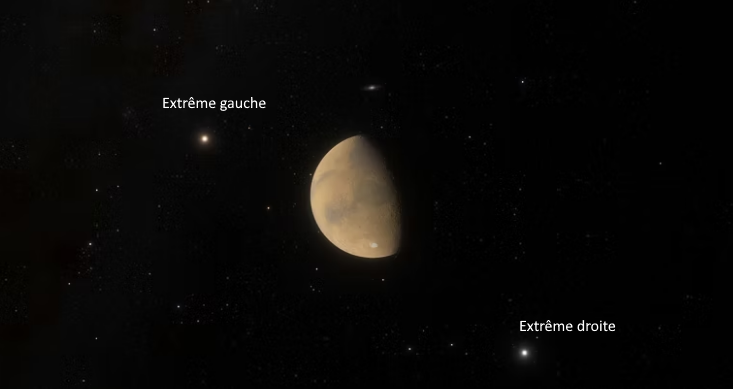
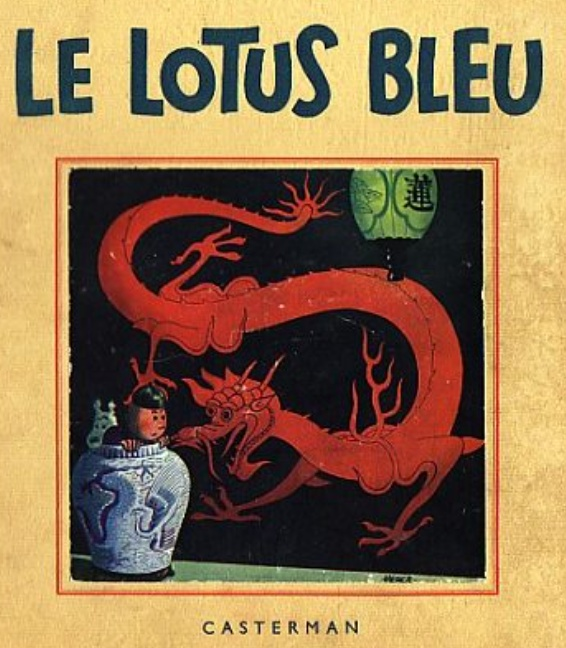
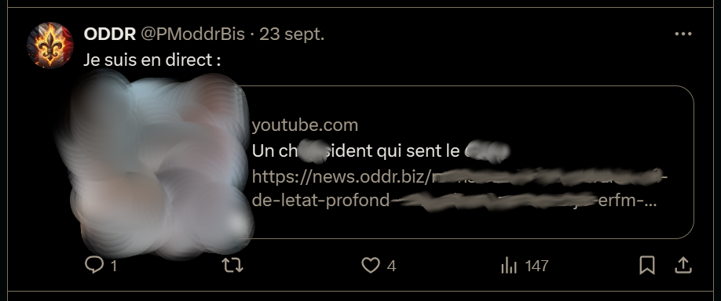
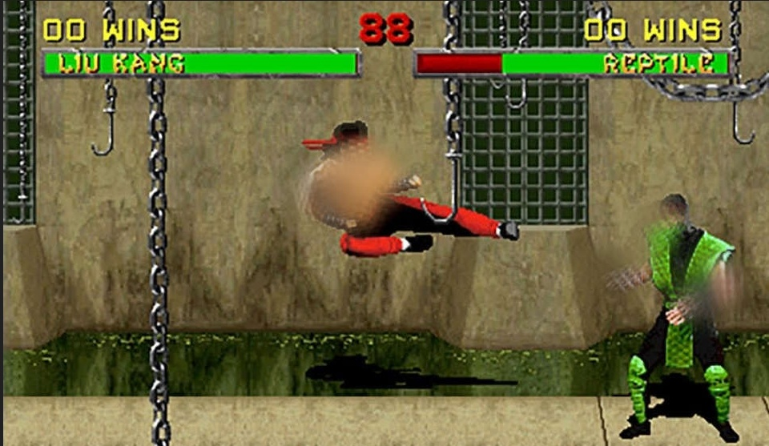
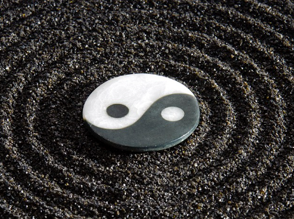
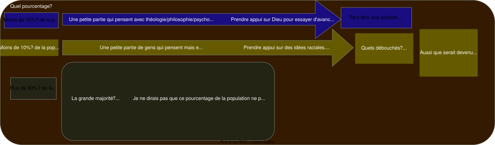

J'estime que la droite ou la gauche, être de droite ou de gauche, n'est pas le critère qui compte le plus (que ce soit actuellement et peut-être depuis toujours, si je considère qu'il existerait un Dieu). (Pour cette page intitulée "Droite et gauche", comme pour la page Occidentaux/Orientaux, ce ne serait pas d'être, de base, de droite ou de gauche, Occidental ou Oriental, qui compterait le plus.) Dans l'hypothèse où il y aurait un Dieu, (ou enfin une superpuissance si certain(e)s préfèrent cette appellation), et divers éléments durent me laisser, pour le moins, suspecter, qu'il y eut "quelque chose", dans cette hypothèse, ce qui compterait le plus, je dirais, c'est au moins, 2 éléments :
pour agrandir/diminuer la taille de l'image avec le scroll de la souris : -soit après avoir double cliqué sur l'image - soit shift+mousewheel ou alt+mousewheel
- soit on serait à proximité de cette superpuissance, soit loin d'Elle : à proximité/ou loin - soit l'on irait vers cette superpuissance, sur une pente ascendante, soit l'on serait en train de s'en écarter, sur une pente descendante : en train de s'écarter ou de se rapprocher. Si cette superpuissance est le Fils, ce Fils, que je sache, n'aurait jamais fait valoir que la couleur de peau serait vraiment fondamentale, cruciale, par rapport à l'esprit, la charité. Alors prioriser que les problèmes viendraient de la couleur de peau, je dus quand même avoir, du moins, l'hypothèse, que ce serait un égarement, voire une régression de l'intelligence. Une conception qui ne serait pas à même de résoudre les problèmes liés aux "races", et une conception qui serait même, à même de les aggraver.
Il n'y aurait, de base, que deux camps : Dieu ou le diable/les ténèbres.
Et, d'après au moins un texte qu'aurait dicté le Fils, de plus en plus?, les Humains devraient se séparer en 2 groupes : voir éventuellement citation dans volet qui devrait s'ouvrir après clic sur bouton en haut à gauche)
"Il n'y a que 2 races" : un extrait d'une chanson chantée par Daniel BalavoineIl n'y a que 2 races? Je n'en verrais pas forcément que 2. Mais qu'il y en ait 2 ou plus, de ce que je vis, de ce que j'ai écouté de divers textes théologiques, je n'eus pas l'impression que depuis la venue sur terre du Fils (il y a environ 2000 ans), il ait été mis en avant qu'une "race"/couleur de peau, serait supérieure, ou inférieure à une autre. Ou qu'il faille en détruire une, ou plus d'une.
Pour les expressions "Extrême "droite"", et "extrême "gauche"", j'aurais de quoi leur mettre des guillemets, car les Créatures ayant été qualifiées comme étant à l'extrême droite, furent elles tout à fait "droites", extrêmement "droites", droites dans le sens "carrées", justes.. ? Eh bien j'estime que non, pas en tout point. D'un autre côté, est-ce que les Créatures qualifiées comme étant à "l'extrême gauche", furent tout à fait "gauche", dans leurs comportements? "Gauches" dans le sens maladroites. Eh bien j'estime que non. Pas tout à fait non plus.
Je dirais que d'un côté l' "extrême gauche" croirait que si l'on fait une grande "kermesse", ceci pourrait aller. D'un autre côté, l' "extrême droite" croirait que si l'on sépare fortement ou même extermine, ceci pourrait aller. Mais je dirais que d'un côté comme de l'autre, c'est l'apostasie, l'impasse.
Sur cette page droite/gauche, une partie sur Pierre-Marie de l'''oddr'' et une partie sur ''Mathieu B/Claude/le grand Monarque''
Préambule Pierre-Marie P. et Mathieu B.
Deux Créatures je dirais assez authentiques, d'un certain niveau quant à ce qu'elles me semblèrent avoir compris du monde. Ils abordèrent des sujets qui ne me semblèrent pas connus, réputés à leur juste valeur.
Je ne fais pas cette partie pour encenser Pierre-Marie ou Mathieu B. Ce n'est pas que je chercherais à faire la promotion de tout ce que produisirent Pierre-Marie et Mathieu B. (audio et/ou vidéo et/ou textes). Sur la forme, ils eurent pas mal de mot d'argot et que pour le fond, surtout pour Mathieu B, j'aurais pour le moins de quoi me demander si sur le fond, il eut un extrémisme violent, sous emprise démoniaque. Ce ne serait donc pas forcément aider Pierre-Marie P. et Mathieu B. que d'abonder dans certaines de leurs déclarations. Sur le fond, pour Pierre-Marie P. aussi, sur certains points, je dus avoir l'impression, dans certains de ses comportements, qu'il était assez égaré de Dieu, aussi, donc pour lui aussi, je n'irais pas sur certains points dans sons sens : faire des jeux de mots plus ou moins gores sur des noms de famille, et/ou se moquer plus ou moins de problèmes/aspects physiques des uns ou des autres. Vraiment par moments, une ambiance plus ou moins glauque, plutôt digne d'adolescent égaré (ou même de certains comportements parfois de Gens plutôt de droite) plutôt que d'un Catholique digne de ce nom. Sur cette page, dans les parties sur Pierre-Marie P. et Mathieu B., par moments, j'ai essayé de faire du "blanchiment" audio (avec blancs au lieu de mot d'argot, surtout pour Mathieu B.) et de l'analyse. En fait Pierre-Marie P. et Mathieu B. me semblèrent assez archétypaux, je dirais, pour Mathieu B., Archétypal d'une partie de la droite (Archétype des Gens plutôt focalisés sur "la race"). Et, pour Pierre-Marie P. plutôt Archétype de certains Gens de gauche (mais d'un certain niveau)
En fait, pour rédiger autrement, Pierre-Marie P. et Mathieu B. je suspecte seraient les "résumés"/représentants de milliers de Gens (ou peut-être même dizaines de milliers de Gens, ou plus? de Gens (en france ou ailleurs dans le monde). (Certains ne connaitraient pas forcément Pierre-Marie P. et/ou Mathieu B. mais je suspecte auraient auraient des mentalités, idées semblables)
Ce que je dus apprécier chez Pierre-Maire, c'est qu'il comprit certaines choses. Par exemple que le système scolaire était globalement un truc ***.
Ce que je dus apprécier chez Mathieu B. c'est sa conception qu'il est inconcevable de croire que l'on pourrait se mélanger n'importe comment et croire que ceci pourrait aller. Dans une époque d'indistinction telle qu'actuellement, ceci dut me sembler une certaine bouffée d'air.
mais enfin sur certains points, il me semblerait vraiment à côté, aussi.
Par contre un problème, c'est que le référentiel de Mathieu B., il me sembla, aurait été surtout "la race" dans le sens couleur de peau. Or ce référentiel me semblerait erroné, par rapport à ce qu'évoqua le Fils.
pour agrandir/diminuer la taille de l'image avec le scroll de la souris : -soit après avoir double cliqué sur l'image - soit shift+mousewheel ou alt+mousewheel
Comparaison Pierre-Marie / "Mathieu B" Au niveau de l'orientation des deux je verrais plutôt Pierre-Marie à gauche et "Mathieu B" à droite. Mathieu B, au niveau de la pensée, aurait une certaine finesse orientale (une excessivité, parfois, aussi), alors que je verrais Pierre-Marie P. beaucoup plus occidental.
Pierre-Marie P.
"Mathieu B"
🐕
🐅
Comportement relativement Occidental-"canidé" (tendance à "aboyer" (mots d'argot, rap particulier)). Parfois aussi il évoqua qu'il n'aimait pas les chats.
Des capacités, un intérêt pour les enquêtes. Du flair, en quelque sorte. audio de chien qui renifle
Comportement plutôt oriental-félin Peut-être à mettre en lien avec des origines montagnardes (savoie) (sur la
(de ce site up778.github.io) j'ai associé les montagnes, le climat montagnard avec l'orient) Je dirais davantage de droite que P.M. (j'imagine le rap est pas trop le "truc" de Mathieu B., pas trop son "truc" de mettre sur son tweeter des musiques de rap avec des Gens "de couleur", comme le fit P.M.)
Je crois moyennement que ce soit un lecteur. Par exemple, que ce soit pour l'œuvre de Maria Valtorta ou Luisa Piccarreta, j'imagine il ne les a que peu, ou sinon peu, très peu lues.
Je suspecte que Mathieu B. eut une culture livresque (si tant est qu'il fut l'administeur de certains site avec pdfs en lignes) bien plus importante, une sorte d'attirance à la lecture, bien plus importante que PMP (mais ceci dépend pour quels livres). Diverses vidéos dans lesquelles il présenta des livres me laissèrent suspecter qu'en général, c'était "son truc" de lire des livres (du genre, au moins quelques livres par mois)
Plutôt une intelligence de coeur
Plutôt une intelligence de tête
En ce qui concerne la relative non popularité de Pierre-Marie P. et Mathieu B., et leur bannissement de youtube ou autre
En ce qui concerne la relative non popularité de Pierre-Marie P. et Mathieu B., tantôt j'aurais de quoi déplorer que les sujets qu'ils considérèrent semblèrent assez peu intéresser la population (en comparaison au sport, par exemple), tantôt j'estime ce n'est peut-être pas pour rien qu'ils furent parfois bannis de youtube ou autre. Ne serait-ce que parce que que ce soit l'un ou l'autre, sous certains points, je ne vois pas en quoi j'aurais à écarter qu'ils furent plus ou moins sous emprise démoniaque. En quoi est-ce qu'il faudrait que quelqu'un qui prononce assez souvent des mots d'argot soit populaire? Ou quelqu'un qui pourrait sembler pousser à des actions de violence physique.
Comportements de Mathieu B. ou Pierre-Marie P. Propos avec mots d'argot, malgré les années qui passent
comportement de youtube ou autres plateformes
Incitation à des actions de violence physique
Tantôt peut sembler assez abrupt s'ils ne laissent pas non plus de chance au producteur, en lui disant par exemple :soit tu arrêtes tes incitations à la violence physique, et les insultes/mots d'argots, soit bannissement.
Tantôt, dans une époque telle qu'elle, qu'il y ait un bannissement assez strict pour des contenus poussant en partie à la violence physique, ce n'est peut-être pas plus mal.
Ce genre de comportements, au sein de populations peut-être fragiles, immatures, en quoi ce serait positif?
Pour des gens, encore en partie sous emprise, ce n'est peut-être pas non plus les aider, que de promouvoir des comportements pour lesquels ils seraient encore sous emprise.
Maintenant, pour Mathieu B., je ne sais pas ce qu'il serait devenu depuis sa disparition de 2022. Peut-être aurait-il évolué? Je ne sais pas.
En fait, tant qu'il n'y aurait pas un certain ré-équilibrage, je ne vois pas en quoi ce serait forcément négatif, qu'ils furent parfois mis de côté, par youtube ou autre. Tantôt ce pourrait me sembler assez abrupt, tantôt c'est peut-être pas pour rien non plus, qu'ils furent mis de côté. La situation ne me sembla pas non plus telle qu'ils n'auraient pas disposés de réseau alternatif (par exemple gab ou telegram) pour diffuser leurs points de vues. Ils ne furent pas non plus, de ce que je vis de leur nombre de vues (pour leurs vidéos ou gab ou tweeter), et à considérer que ce nombre de vues fut assez véritable, ils ne furent pas non plus sans une certaine audience. Peut-être ceci aussi les protégea d'eux-mêmes, de ne pas avoir été forcément très connus, il y a quelques années (jusqu'en 2022 inclus), parce que quand on prononce des mots d'argots où quand on évoque Vlad Țepeș (
), ou des actions de violence physique, il "faut assumer" ensuite, et là .. dans quoi on s'embarque..
extrait audio édité de la vidéo duel v1, de Mathieu B
pour agrandir/diminuer la taille de l'image avec le scroll de la souris : -soit après avoir double cliqué sur l'image - soit shift+mousewheel ou alt+mousewheel
En ce qui concerne la non-popularité des sujets qu'abordèrent Pierre-Marie P. et Mathieu B.
En fait il me sembla en aller, et qu'il en va encore (je rédige ceci le dimanche 10 novembre 2024), comme il en alla depuis des siècles sur cette planète : comme la sensation qu'il y a un décalage entre la popularité de telles ou telles problématiques et l'importance que ces problématiques représentent cependant pour la société. Autrement rédigé, peu de Gens me semblèrent s'intéresser à des sujets de société, en comparaison de la quantité de Gens qui s'intéressent à la politique, au sport.. Pour les vidéos, interventions, de Mathieu B. et Pierre-Marie P., en général, de ce que je vis, ils firent quelques centaines de vues, ou milliers de vues, (à part peut-être Mathieu B. lorsqu'il commença sur youtube et qu'il eut plusieurs dizaines de milliers de vues, mais j'eus un doute quand au nombre de vues qu'il fit, à l'époque, au moment de rédiger ceci) en attendant que des A. Soral, etc., firent des dizaines de milliers ou même centaines de milliers de vues. En attendant que des politiciens recevaient des centaines de milliers de votes, voire des millions de votes pour eux. En attendant que des "stars" de la chanson, du cinéma, recevaient des millions de vues..
pour agrandir/diminuer la taille de l'image avec le scroll de la souris : -soit après avoir double cliqué sur l'image - soit shift+mousewheel ou alt+mousewheel
Créature de droite, Créature de gauche et Créature équilibrée
Tableau comparatif gauche/droite
Comparatif "intelligence de l'esprit" (rationalité) et intelligence du cœur, gauche/milieu/droite, jusqu'en 2023 inclus et depuis au moins des décennies. (Pourcentages approximatifs, plutôt donnés pour se faire une idée que pour leur précision.)
Créature d'extrême "gauche"
Population générale plutôt orientée à gauche
Créatures à peu près équilibrées entre intelligence du cœur et rationalité
Population générale plutôt orientée à droite
Créature d'extrême "droite"
En europe, plutôt les peuples du sud (= méridionaux) (Par exemple, les Espagnols)
Les religieux, en général
En europe, plutôt les peuples septentrionaux (peuples du nord) (Par exemple, les Allemands)
beaucoup d'africains d'afrique centrale
Certains Artistes (paroles de leurs chansons pas toujours des plus rationnelles)
Une partie de la population
Certains artistes qui arrivent à combiner cœur et esprit (paroles des chansons relativement rationnelles). Artiste plutôt près de Dieu.
une partie des Judaïsants, par défaut, auraient un petit cœur : leur circoncision les rendraient relativement froids, insensibles aux problèmes des non-Judaïsants. Cas peut-être à part : certains Judaïsants qui donnèrent des cours vidéos sur le judaïsme (enfin du moins les francophones, puisque ceux d'autres langues, j'ai moins écouté), puisque de part leur activité, ces Judaïsants partagèrent. Ces Judaïsants seraient aussi une préfiguration du Judaïsant qui retourne à un poste d'aidant pour les nations.
- Beaucoup de Judaïsants - Les Créatures d'extrême "droite" - Les scientifiques (en particulier occidentaux)
Les Filles en général. En général plutôt orientées à gauche. (Fortes dans les sentiments, intelligence des sentiments, intelligence du cœur, relativement fortes en littérature)
Les Garçons en général. Je dirais en général plutôt orientés à droite. (Relativement forts en rationalité, physique, mathématiques, mécanique, sciences)
Les artistes en général : par exemple : Damien Saez, Stanley Kubrick (Stanley Kubrick typiquement de gauche je dirais, fort pour capter des sentiments, des scènes, mais pas tellement capable d'articuler rationnellement ces clichés émotionnels (fin de 2001 l'odyssée de l'espace rationnellement compréhensible?)). Mylène farmer, et d'autres. 🎷 Compositeur de musique, de gauche : je dirais Schubert.
pourcentages coeur/tête
pourcentages coeur/tête
15 / 85
35 / 65
50 / 50
65 / 35
85 / 15
Titre
De base, ils auraient ce pourcentage, du fait de leur circoncison. Ils auraient par défaut, un cœur relativement peu développé. Telle une Fille ménopausée, eaucoup plus stable, mais "par défaut", qui aurait moins d'amplitude émotionnelle.
Ce pourcentage du cœur chez les Judaïsants, pour leur rejet si absolu du catholicisme. (En effet, pourquoi rejeter à ce point toutes ces Créatures religieuses aux existences si prestigieuses)... Presque incompréhensible, un tel rejet de leur part.
"Petit cœur chez l'extrême droite"
"Petit cœur chez les Judaïsants"
Lié à des déviances comportementales (violence, souvent)
Le rapport qu'ils eurent aux Enfants, aussi, me laisserait supposer qu'ils ont plutôt un petit cœur : car comment d'un côté se plaindre de l'état "racial" d'une société, et simultanément, se permettre de mettre un ou des Enfant(s) dans une telle société? Si ce n'est un pauvre amour envers ses enfants?
Vincent Reynouard et la musique
Je ne serais pas étonné que beaucoup de Créatures d'extrême "droite", en général, eurent un goût assez peu développé pour la musique.
Déclaration de Vincent Reynouard Extrait issu de l'émission DPE33S07
Conception du rôle de la Fille assez similaire chez les Judaïsants et les Créatures d'extrême droite : les Filles seraient essentiellement là pour enfanter. Peu de valeur donnée à la virginité. Mise de côté de toutes ces saintes qui n'eurent pas d'enfants physiquement...
Extrême "droite" et Judaïsants : deux frères ennemis qui se cherchèrent mutuellement l'un l'autre
4 octobre 1906 - Le livre du Ciel Jésus renouvelle en Luisa la Puissance du Père, la Sagesse du Fils et l ‘Amour du Saint-Esprit.
l'Amour du Saint-Esprit / le cœur
La sagesse du Fils L'équilibre
la mémoire, la Puissance du Père
Considérations sur ce petit pourcentage cœur, chez les Judaïsants et l'extrême droite
Symboliquement, un petit cœur chez l'extrême droite
Symboliquement, un petit cœur chez les Judaïsants
Lié à des déviances comportementales (violence, souvent), critère de valeurs basées sur la couleur de peau
Stabilité émotionnelle liée à la circoncision. Mais sensibilité, amplitude émotionnelle peu développée.
En fait pourquoi y aurait-il eu historiquement un tel clash entre l'"extrême droite" et les Judaïsants? Eh bien l'hypothèse c'est parce qu'ils furent comme frères ennemis:
La Créature à l'extrême droite, il lui manquait Dieu, mais le Judaïsant, qui avait beaucoup plus Dieu, il ne partageait pas à la Créature d'extrême droite.
Créature d'extrême droite qui sombre.
Judaïsant qui aida trop peu ou qui ne put aider les non-Judaïsants.
Créature d' "extrême droite" qui souhaiterait aider mais qui ne sait pas comment faire
Judaïsant qui pourrait aider, mais qui n'est pas à sa place et qui est relativement insensible aux souffrances des non-Judaïsants. Créature Judaïsante qui passe pour insensible aux yeux de la Créature d'extrême droite.
Schéma de l'évolution droite/gauche, 2ème fiat, 3ème fiat
pour agrandir/diminuer la taille de l'image avec le scroll de la souris : -soit après avoir double cliqué sur l'image - soit shift+mousewheel ou alt+mousewheel
Aspects positifs extrême ''gauche'' et extrême ''droite''
Aspects positifs de l'extrême "droite" et l'extrême "gauche"
En fait dans un monde où il me sembla y avoir tellement de problèmes, au moins, l'extrême "droite" me sembla quand même assez réactive. Même s'ils me semblèrent assez souvent dans des excès, au moins ils furent là pour réagir à diverses situations. Alors qu'une grande part de la population me sembla plus ou moins amorphe/morbide.

Je ferais une analogie entre extrême "droite", extrême "gauche", et deux satellites d'une planète. Deux satellites à l'opposé l'un de l'autre. Chacun ayant son point de vue. Chacun du haut de l'espace, pourrait avoir des capacités pour se rendre compte de tels ou tels problèmes sur la planète en question. Ces deux satellites, à l'opposé l'un de l'autre, ce que verrait l'un, l'autre ne pourrait pas le voir. Ainsi l'extrême "droite" comprendrait des problèmes là où l'extrême "gauche" semblerait ne rien y comprendre. Et vice-versa. D'un côté l'extrême gauche semble comprendre qu'il faille garder une Humanité envers chacun, et d'un autre côté, l'extrême droite suprémaciste, sembla ne rien y comprendre. (Certains d'"extrême droite pourraient peut-être considérer : mais si, on est Humain, on se préoccupe des autres : ok alors pourquoi qualifier untel ou un autre de bic*t ou de bougn**le ou de "s*l* n*gre" : en quoi ceci ne pourrait-il être, ne serait-ce que parfois, blessant? À gauche, en général on ne se le permet pas, en tout cas certainement pas aussi fréquemment que comme, par exemple, sur le site democratieparticipative.) De son côté, l'extrême "droite" me sembla souvent assez perspicace pour se rendre compte de problèmes raciaux, de problèmes sociétaux, là où la gauche ne me sembla pas y comprendre grand-chose.
Aspects négatifs extrême ''gauche'' et extrême ''droite''
Aspects négatifs de l'extrême "droite" et de l'extrême "gauche" par rapport au Fils
Le Fils
Déviances d'extrême "gauche"
Déviances d'extrême "droite"
le déséquilibre
l'équilibre
le déséquilibre
1er des dix commandements (Tu n'auras pas d'autres Dieux que moi) irespecté : la Créature se prend pour Dieu et part dans des systèmes en freelance (un de ces systèmes : le Stalinisme)
1er des dix commandements (Tu n'auras pas d'autres Dieux que moi) irrespecté : la Créature se prend pour Dieu et part dans des systèmes en freelance (un de ces systèmes : l'Hitlérisme)
Écart par rapport au Fils : indistinction des Créatures, "égalitarisme". Communisme indistinguant les Créatures. Chez certains, Karl Marx mit avant Dieu.
Écart par rapport au Fils : hiérarchisation, mais hiérarchisation malsaine pronation de la violence physique. National-socialisme suprémaciste. Qualifier tel ou tel groupe racial par des mots d'argot. Telle ou telle Créature par des mots d'argot, des sobriquets etc.
Croire que tout le monde serait égaux. constitution française : "nous naissons tous égaux en droit". Irrespect des différences entre les Créatures. Indistinction.
Dans le livre du Ciel et même dans bien d'autres textes de Théologie, je n'ai pas le souvenir qu'il y eut une importance particulière apportée à à la couleur de peau. Par ailleurs, il est évoqué que la beauté vient de la distinction entre les Créatures.
Croire, en l'état actuel du monde, qu'une "race" serait en tout au-dessus de toutes les autres. Pronation de la violence physique. Genre Adolf H.
Attrait pour la concentration, les camps, camps du style goulag (en sibérie ou ailleurs)
Dans le livre du Ciel, il est évoqué que Dieu donna le libre arbitre, la liberté
Attrait pour la concentration, les camps, du style camp de concentration polonais/allemand.
Faire rentrer n'importe qui, n'importe comment, pour enquiquiner l'extrême "droite". Indistinction de son prochain.
Se moquer de l'extrême "gauche".
Aboutissement de l'extrême gauche à la fin du deuxième fiat : (Stalinisme?) : tout est "égaux" (égal), tout est mélangé et finalement on ne sait même plus si on habite dans telle ou telle rue : ce qui ressemblerait à une pathologie du type Alzheimer?
Aboutissement de l'extrême "droite" à la fin du deuxième fiat : (guerre de 1939-1945)?: on est dans la suprématie, la destruction de l'autre et l'autodestruction, la folie furieuse.
Emprise démoniaque entrainant une démence de type plutôt molle.
Emprise démoniaque entrainant une démence de type plutôt agitée.
Un aspect diabolique/démoniaque?
Aspect "diabolique" de l'extrême "droite" et l'extrême "gauche".
Je dirais qu'une des dangerosités de ces deux extrêmes, c'est que leur position de "satellite" leur donna sur certains points seulement (points de vue) leur donna des capacités d'avoir plus de vérités que la moyenne pour ces points particuliers. (Ils comprennent certaines choses mieux que la moyenne.) Aussi peuvent-ils attirer vers eux des Créatures. Mais attention, diverses bases de ces extrêmes sont malsaines, dangereuses. D'où un aspect diabolique (involontairement diabolique, dans bien des cas).
Quel serait un danger de l'extrême droite pour une Créature : elle se tatoue des croix gammées ou autres signes suprémacistes et/ou elle s'arme et/ou elle considère les Filles comme de simples objets et/ou elle va même jusqu'à l'attaque physique violente et finalement que ceci tourne mal.
Quel serait un danger de l'extrême gauche pour une Créature : elle s'arme pour le "communisme", elle va vers le transgenre et ceci tourne mal.
Un danger commun donc de l' "extrême droite" et/ou de l' "extrême gauche" c'est de se rapprocher du diable, de s'écarter de Dieu.
Bilan positif/négatif extrême ''gauche'' et extrême ''droite''
Aspect positif et négatif extrême "gauche"
Équilibre
Aspect positif et négatif extrême "droite"
Humanité envers les uns et les autres Mais comprend mal les différences entre les uns et les autres
Humanité et comprend qu'il y a des différences. Chercher à distinguer dans le respect. Ne pas chercher à tout mélanger sans distinguer.
Comprend assez bien qu'il y a des différences entre les uns et les autres mais inHumanité envers certains
Points communs entre extrême ''gauche'' et extrême ''droite''
Points communs entre extrême "gauche" et extrême "droite"
Un des points communs, de base, entre Créatures d'extrême "gauche" et d'extrême "droite", c'est de base s'être en partie écartés de la volonté de Dieu, et d'être dans une déviance. Les Créatures de droites et celles de gauches pourraient m'avoir semblées se ressembler beaucoup plus les uns les autres qu'il n'y paraîtrait pour beaucoup: la base étant la même : sous divers aspects, dans un cas comme dans l'autre il me semble que pour l'extrême "droite" et l'extrême "gauche", ils furent dans l'écart par rapport à la divine volonté, par rapport à diverses lois de Dieu.
pour agrandir/diminuer la taille de l'image avec le scroll de la souris : -soit après avoir double cliqué sur l'image - soit shift+mousewheel ou alt+mousewheel
Ainsi, il pourrait y avoir bien davantage de ressemblance entre une Créature d'extrême "droite" et d'extrême "gauche", que de ressemblance entre une Créature d'extrême droite (ou gauche) et une Créature qui serait proche de Dieu, proche des dix commandements. Par exemple il pourrait y avoir bien davantage de ressemblance entre certains Judaïsants que critiquent souvent l'extrême "droite" et l'extrême "droite", qu'entre l'extrême "droite" et l'Église catholique.
Ainsi l'extrême droite croient que certains Judaïsants seraient dans divers vices (liés à l'argent, par exemple) mais que font souvent diverses Créatures d'extrême droite : eh bien elles aussi, seraient dans divers vices (par exemple le
(la médisance, les mots d'argots envers diverses communautés): ainsi certains Judaïsants et certains d'extrême "droite" se rapprocheraient davantage entre eux qu'ils se rapprocheraient d'un catholique (qui lui ne serait pas dans le vice car ni il n'aurait ni un culte pour l'argent, ni il ferait de la médisance).
Extrême-"gauche", extrême-"droite", communisme, national-socialisme, que ce soit en occident ou en orient : les deux faces d'une même pièce? pièce elle-même au moins partiellement écartée de Dieu?
Dans un cadre anthropologique, j'ai estimé que diverses Créatures d'extrême "gauche" et d'extrême "droite" pourraient tout de même porter un intérêt, car l'on peut se rendre compte de jusqu'où des Créatures peuvent aller dans leur extrémisme. Ainsi, j'estime il en aurait été selon F. Nietzsche, pour Wagner. Nietzsche aurait trouvé Wagner dangereux, mais il aurait quand même estimé que Wagner aurait été Quelqu'un dont l'étude était fondamentale pour un psychologue. (Je connais relativement peu la musique de Richard Wagner, je n'ai pas vraiment d'opinion personnelle sur la sainteté ou la malice de la musique qui aurait été produite par lui.)
Pierre-Marie (de l' ''oddr'')
(Image de fond, pour cette partie Pierre-Marie (de l' ''oddr'') :
(Pourquoi Michel, tout court plutôt que "saint Michel"? : parce que je me demande si Michel ne pourra devenir d'un certaine manière saint, seulement lorsque rayonnera le 3ème fiat, le Fils)
Préambule - Pierre-Marie P., de l'oddr
Sur certains sujets, Pierre-Marie me sembla assez vivant/réactif. Mais par moments, une aura assez négative me sembla émaner de Pierre-Marie. (Insultes faciles, focalisation sur le négatif, manque de capacité de faire la part des choses, ambiance "chasse à l'homme"). Par rapport à "Mathieu B" (qui aurait à peu près le même âge, j'estime), je dirais que Pierre-Marie me sembla plutôt Occidental, et plutôt de "gauche". Alors que "Mathieu B" me sembla plutôt de droite et avec une partie plus prononcée de quelque chose d'oriental. Au cours des dernières années, j'ai regardé/écouté plusieurs vidéos youtube de Pierre-Marie. Il me sembla avoir, sur certains points, une certaine intelligence, une curiosité pour le monde. De base, j'estime qu'il eut une âme plutôt bonne. De mémoire, je crois qu'il avait évoqué être fils de médecin. Je ne serais pas étonné que cette parenté ait joué sur certaines capacités d'analyse qu'il me sembla avoir. Je crois aussi qu'il aurait, en partie du moins, une ascendance liée à certains rois de france. (Peut-être du côté des bourbons, si je me souviens correctement de certains de ses propos.) Ce qui me sembla pouvoir trouver une certaine plausibilité, à considérer la capacité qu'il me sembla avoir eut à penser à ceci ou cela. Il me sembla avoir une perspicacité sur certains sujets, une perspicacité qu'au moins 80% de la population adulte ne me sembla pas avoir eue. Il évoqua être allé tout de même dans certains comportements (j'imagine, entre autres, l'alcool, la drogue (cannabis?), cigarette). Et j'ai suspecté qu'il soit encore, partiellement, sous emprise de diverses puissances "démoniaques" (mais peu de Créatures ayant plus de 15 ans d'âge ne seraient pas, pour le moins déséquilibrées, actuellement (1er quart du XXIème siècle), en occident, dans une telle époque (pour les pourcentages voir éventuellement la page
de ce site)). Parfois, Pierre-Marie me sembla avoir eut une âme assez positive qui me sembla essayer de s'en sortir, et au moins prêcher, en partie, le Christianisme. Je trouve il eut aussi un certain courage de dénoncer ceci ou cela, là où d'autres, je dus me demander où ils furent, depuis des années. Parmi les Gens parfois "étiquetés" de dissidents, dans la droite, sous certains aspects, il me sembla un des plus intelligents, sous réserve qu'il fut vraiment cultivé et pas juste bon à ressortir certaines considérations sur tel ou tel Auteur / époque (par exemple pour Friedrich Nietzsche ou Maria Valtorta). Dommage qu'à l'image d'un Marc-Édouard Nabe, il m'ait parfois semblé gâter une certaine intelligence par certains comportements évidemment pas des plus catholiques (dont la violence verbale).
Pierre-Marie ("oddr") En plutôt positif en plutôt négatif
En plutôt positif
En plutôt négatif
Une certaine vivacité d'esprit. Il me sembla avoir eu quelque chose d'assez authentique, franc. Genre quelque chose de plutôt "campagnard"/provincial. Un certain attachement pour le Christianisme. Depuis des années, il me sembla avoir compris certains points, là où plus de 80% de la population d'âge adulte me sembla, pour le moins, pas des plus réveillée. Par exemple, Pierre-Marie me sembla avoir compris qu'il fallait avoir certaines réserves, par rapport au système médical. Il fit des théories aussi selon lesquelles la s*domie aurait une importance sur la psyche. Et ce me semblerait assez vrai. Surtout s'il y a des comportements répétés de s*d*mie.
Sur certains Auteurs (Maria Valtorta ou Friedrich Nietzsche), je dirais une pensée peu raffinée/pondérée. Mots d'argots.
Une ambiance parfois collège fin XXième, début XXIème siècle. Avec moqueries sur le physique. Ambiance genre chasse à l'homme. Et puis limite menaces de violence physique, aussi.
Sur la sexualité, j'pense pas trop que Pierre-Marie soit des plus adapté à s'occuper de la sexualité des Incirconcis. De mémoire, dans une vidéo d'il y a moins d'un an (à compter d'un an avant le lundi 21 octobre 2024) il évoqua que "egregor" avait dit que Pierre-Marie était circoncis. Une circoncision (qu'aurait PM(il l'évoqua dans une vidéo publique)), une circoncision, j'estime, qui irait de pair avec une ambiance que je pu ressentir à travers divers tweets, ou d'autres écrits, de Pierre Marie. Que ce soit Pierre-Marie ou d'autres (par exemple, parfois, Salim Laïbi), il me sembla parfois y avoir un niveau de violence assez élevé quand ils s'occupèrent de la sexualité d'autrui. Qu'il soit déclaré qu'on trouve qu'il y a tel ou tel problème, c'est une chose, mais faire de la chasse à l'homme, c'en est une autre.
En fait, je dirais Pierre-Marie me sembla parfois assez marrant, parce que quand même, je dus ressentir un certain marasme sociétal et dans ce marasme, il mit un coup de pied dans la fourmilière, mais bon, avec des méthodes pas géniales non plus, donc une sensation mitigée.
Sorte de coup de pied dans la fourmilière. Comportement assez marrant parce qu'il y a quand même pas mal de problèmes.
Comportement peut-être discutable, mais enfin, divers Gens seraient assez souvent dans certains comportements, alors... Peut-être une indulgence particulière aussi.
Pierre-Marie assez paradoxal, car - sur certains points, Pierre-Marie me sembla bien au-dessus de la moyenne: par exemple, il comprit qu'il y avait comme un problème avec Alain Soral, ou certaines peintures de nus du vatican (alors que la plupart ne me semblèrent rien, ou sinon rien, à peu près rien, y comprendre). Par contre, sur d'autres points, assez en dessous de la moyenne: sa conception abrupte sur Maria Valtorta. Un extrémisme assez étrange sur cette figure du catholicisme. À se demander s'il aurait eu une mauvaise expérience par rapport à la mère de sa Fille, et qu'il en aurait acquit une sorte de rejet généralisé pour les Filles en général. mise-à-jour du lundi 28 octobre 2024 :quoique il y a quelques semaines (sinon mois), de mémoire il évoqua avoir changé de position sur M. Valtorta.
Pierre-Marie, l'appellation ''oddr'' et le pseudonyme ''amalek''
Pendant un temps, je crus qu'oddr signifiait "ordre du dragon rouge", mais j'ai vu un post telegram https://t.me/ODDRCLUB/3506 du "canal" oddr à propos de "ordre du dragon renversé". À croire que je vis "des rouges" partout.

Mais comme Pierre-Marie dut me sembler avoir, en partie du moins, une mentalité de gauche (pas forcément en négatif, une mentalité de gauche dans le sens où il ne me sembla pas avoir tellement de focalisation sur la "couleur" de peau, comme à l' "extrême droite"), alors peut-être ceci m'orienta à croire que oddr = ordre du dragon rouge. Mais oddr signifierait plutôt "ordre du dragon renversé". Mais ce nom, comme son pseudo amalek dut me sembler assez spécial, car déjà pourquoi s'appeler "amalek". De mémoire, il se prononça là-dessus, en évoquant que nous étions maintenant des "amaleks", depuis la venue du Christ. Personnage pas des mieux réputé dans la bible. Pourquoi aussi prendre le parti de "risquer" d'exciter divers Judaïsants, à prendre ce pseudo. Et pourquoi ordre du dragon renversé? Serait-il pas plus logique de s'appeler ordre de Michel archange renverseur?, ou ordre de Michel archange, ou enfin une appellation de la sorte? Cette mentalité "d'inversion" je dirais, selon moi, serait aussi assez typiquement de gauche. (Peut-être aussi un comportement qui m'orienta, pendant un temps, à croire qu' "oddr" signifiait "ordre du dragon rouge".) Ces inversions (l'appellation oddr et le pseudo amalek) durent me faire penser à Karl Marx et certaines inversions sur les mots qu'il fit aussi. Manière peut-être assez typique "de gauche" de considérer ceci ou cela.
Pierre-Marie (de l' ''oddr'') et Christianisme
Quand même quelques différences par rapport à diverses grandes figures du catholicisme
Tableau de différences assez importantes entre Pierre-Marie et diverses grandes figures du catholicisme
Pierre-Marie ("oddr")
Les plus grandes figures du Christianisme, depuis des millénaires
Souvent, il me sembla ne voir que des aspects sombres des uns et des autres. Ce qui serait plutôt une forme de mentalité occidentale, mollement "possédée" par des puissances négatives. Sorte de manière occidentale de "penser". Parfois une pensée "par aboiements". 🐕
Essayèrent d'avoir une charité, de faire la part des choses dans leurs considérations sur autrui et sur le monde.
Mots d'argots fréquents dans divers clips de rap, au cours des dernières années.
Jamais (ou sinon jamais, quasiment jamais) d'insultes, de mots d'argot, que ce fut dans leurs écrits ou dans leurs propos. (Sur des milliers de pages d'écrits, depuis plusieurs siècles.)
Me sembla parfois plutôt adepte des ratonnades, du "cass*ge de figure".
Prêchèrent la non-violence physique. S'ils prêchèrent la guerre, ce fut sous commandement de Dieu (Jeanne d'Arc par exemple).
Pierre-Marie - Maria Valtorta, Luisa Piccarreta, Friedrich Nietzsche
Pierre-Marie (de ''oddr'') et son rejet si absolu de Maria Valtorta
Pierre-Marie me sembla avoir eut un rejet assez brutal, limite pour moi incompréhensible, pour Maria Valtorta. (Rejet d'une radicalité assez semblable à celle que me sembla aussi avoir eut Adrien Abauzit pour Maria Valtorta). Que l'on se pose des questions sur certains passages de Maria Valtorta, ce me semblerait une chose, mais qu'elle soit rejetée à ce point, là, il me sembla vraiment y avoir quelque chose qui clochait. Une situation très paradoxale, bizarre chez Pierre-Marie, avec d'un côté une sorte d'attrait qu'il me sembla avoir pour le catholicisme, le Christianisme, et d'un autre côté, la radicalité de son rejet pour Valtorta. Un des points chez lui, je dirais, les plus problématiques, bizarre.
Un site qui mériterait d'être davantage fourni sur ce rejet de Maria Valtorta?
Au risque de passer, pour le moins, pour léger?
capture d'écran du 30 août 2023 (éditée avec un ajout d'une ellipse rouge)
Faudrait-il sortir + de "billes", avant de rejeter si abruptement une œuvre de plusieurs milliers de pages.
Pierre-Marie (''oddr'') et Friedrich Nietzsche
Dommage qu'il eut un rejet à ce point de Friedrich Nietzsche. Même si je trouve qu'il y eut des problèmes chez Friedrich Nietzsche, j'ai trouvé que le point de vue de Pierre-Marie manquait de pondération (comme pour M. Valtorta). En fait, Pierre-Marie me sembla avoir eu une mentalité assez typique de gauche, par rapport à Friedrich Nietzsche. Je trouve, il n'eut pas tort concernant le point de vue selon lequel il y aurait un aspect radical chez Nietzsche (avec certaines notions sur les "faibles", les "r*tés"). Mais ce serait beaucoup trop réducteur de croire que Friedrich Nietzsche aurait été purement "fasciste", "nazi", obtus. Et puis ce serait pour le moins trop peu replacer diverses considérations, écrits de Nietzsche dans un contexte, une époque, la situation familiale de Friedrich Nietzsche. Comme si Pierre-Marie n'avait surtout retenu que l'aspect plutôt extrême de Friedrich Nietzsche, sans prendre en considération que Friedrich Nietzsche s'en était pris aussi au nazisme déjà grandissant de son temps. À se demander déjà s'il aurait lu au moins la moitié des derniers livres de l'auteur. Ou même ne serait-ce que 5% de l'œuvre.. À réfléchir à la question, je dus suspecter que Pierre-Marie, n'ai pas vraiment compris Friedrich Nietzsche, en réalité. Ne serait-ce que parce qu'il y aurait bien des ressemblances entre le positionnement religieux de Pierre-Mairie et celui de Nietzsche : c'est-à-dire un combat contre certains faux religieux (contre le protestantisme/jansénisme en général chez F. Nietzsche, et contre, du moins, certains faux Catholiques, chez Pierre-Marie). Ne serait-ce que pour ceci, Pierre-Marie, n'aurait-il dû tout de même avoir une certaine estime pour F. Nietzsche? Enfin à moins qu'il ne l'ait pas beaucoup lu et/ou pas compris.
Il me sembla, ce comportement par rapport à Nietzsche rejoignit aussi un comportement assez fréquent chez Pierre-Marie: voir seulement l'aspect extrême négatif chez autrui, plutôt que de faire la part des choses.
275. Celui qui ne veut pas voir la hauteur d’un homme regarde, avec d’autant plus de pénétration, ce qui est vulgaire et superficiel en lui — et par là se trahit lui-même.
source de cet extrait - Par dela le bien et le mal, Friedrich Nietzsche
Mais c'est autre chose de faire une analyse poussée sur les propos, les considérations de tel ou tel Auteur, que d'exclure complétement tel Auteur, à l'appui de quelques à priori ou seulement quelques morceaux de l'auteur.
À la portée de certain(e) Enfant de 10 ans
Pas à la portée de l'immense majorité des enfants de 10 ans, si ce n'est tous
Se donner une aura de connaisseur en rejetant une œuvre à l'appui de quelques considérations que l'on aurait apprises par cœur ou d'états d'âmes basés seulement sur quelques parties d'une œuvre. Sans même, pour certains, avoir lu, ne serait-ce que 20% d'une œuvre.
Lire et comprendre (au moins dans les grandes lignes) une œuvre de plusieurs centaines ou même plusieurs milliers de pages (Maria Valtorta). Faire une analyse de tels ou tels passages. Faire la part des choses. Remettre dans son contexte.
À la portée d'un(e) Enfant de 10 ans. (Si tant est que l'Enfant accepte d'utiliser ce procédé contre un Auteur/une œuvre, car en général, à cet âge-ci, je suspecte beaucoup d'enfants ont encore une certaine gentillesse, innocence, et ne se permettraient pas de descendre Quelqu'un sans essayer d'abord de bien comprendre pourquoi ils le feraient.)
Pas à la portée d'un(e) Enfant de 10 ans. (Excepté peut-être cas exceptionnel.) En général (si ce n'est toujours), ceci demande au moins des mois, si ce n'est plutôt des années de lecture et de compréhension.
Pierre-Marie (''oddr'') - Le rap - le langage / Quelques considérations sur le rap
Une vidéo-musique plutôt rap avec paroles sans mots d'argot
Pierre-Marie P. me sembla avoir des capacités musicales et un certain rythme. Peut-être je mettrai plus tard quelques extraits où il chante et qui me semblèrent assez stylés.
Ce qui j'imagine, c'est qu'au moins parfois, même quand il prononça des mots d'argot, il chercha un certain impact sonore. Et qu'il ne faut pas forcément prendre au premier degré, parfois, les paroles qu'il prononça. Comme pas mal de rappeur et même, de manière plus générale, comme pas mal de chanteurs, j'estime qu'ils cherchèrent avant tout la sensation sonore, il explorent les sensations sonores (ou du moins, certaines sensations sonores). J'imagine que des Gens assez "froids", peu sensibles à la musique, pourraient vraiment ne pas apprécier le rap. Et se sentir(ent) vraiment agréssé.
Personnellement, je trouve il y a des morceaux de rap, des rythmes vraiment pas mal. Un hic, je dirais, pour le rap en particulier, pour certaines chansons de rap, c'est les mots d'argots. Mais la pour la partie instrumentale, il y a vraiment des airs pas mal, j'ai trouvé, dans certaines musiques de rap.
Parfois, comme pour son comportement par ailleurs, Pierre-Marie me sembla parfois donner un aspect sombre/"racaille" au rap. Dommage, parce qu'en partie, par la qualité de compréhension qu'il eut de divers problèmes, il pourrait redonner quelques lettres de noblesse au rap. Malheureusement, en continuant à prononcer des mots d'argot, à mettre en avant la violence, il (ou plutôt les puissances "démoniaques" qui l'habitaient) me semblèrent parfois abimer en partie l'image du rap. Lui-même, il me sembla qu'il se plaignit assez souvent d'une certaine "élite", mais avoir donné au rap, par des mots d'argots, des propos insultants, une teinte de "racaille", ceci ne fit-il évidemment pas le jeu/les choux gras de cette même "élite"... Certains rappeurs avec mots d'argots, insultes, violences, ne s'auto détruisirent ils pas évidemment eux-mêmes depuis des décennies avec ces comportements? De plus, dernièrement (en 2022), je vis qu'il mit en vente un album, donc il essaya de recevoir de l'argent (assez peu), pour un album dans lequel, je suspecte, des mots d'argot étaient prononcés... En quoi les mots d'argot iraient dans le sens d'un comportement des plus Christique... De mémoire, au moins à un moment, dans le livre du Ciel, Le Christ évoqua à Luisa Piccarreta, ?au niveau des mots prononcés? l'importance de son comportement (faudrait que je retrouve la référence). Il serait aussi à considérer que sur des dizaines de milliers de pages de textes religieux, depuis des millénaires, il n'y eut pas, (ou sinon pas, quasiment pas) de mot d'argot... Alors est-ce que maintenant l'argot, serait validé par le Christ? Peut-être?... Mais encore faudrait-il l'expliquer. Or Pierre-Marie l'expliqua-t-il?
J'estime qu'il mériterait tout de même, lui et d'autres bien peu nombreux à s'être occupé publiquement de certains problèmes du monde, une certaine indulgence. Autrement rédigé, certes il aurait prononcé des mots d'argots, mais j'estime ce fut un des seuls à s'occuper publiquement de tels ou tels problèmes. À se demander même si symboliquement ce serait plus louable de dénoncer tels ou tels problèmes quitte à prononcer des mots d'argots (avec certaines limites tout de même), plutôt que de rester sans rien faire. Enfin je vis qu'au moins une fois, il relaya une chanson de rap sans mots d'argots.
Mais connaissez-vous le sens du mot "religion" ? Cela signifie suivre Dieu et sa Loi, et non pas seulement chanter des beaux hymnes, faire de belles processions, suivre de beaux offices, aller entendre d’élégantes prédications, être le membre A ou B de telle association, toutes choses qui excitent vos sentiments, rien de plus. Religion signifie transformer l’homme animal en un homme demi-dieu. Il faut supprimer, par la religion, l’animalité sous ses formes les plus diverses, qui vont de la chair à l’intelligence. À bas la gloutonnerie et la luxure, à bas l’avarice et la paresse, à mort le mensonge et l’orgueil. Soyez chastes, charitables, humbles, honnêtes, en somme soyez tels que Dieu le veut et comme je vous ai enseigné à être. Alors vous serez adultes dans la religion, dans la foi; vous serez des hommes accomplis, car vous serez de ceux "qui, par la pratique, ont les sens exercés à discerner ce qui est bon et ce qui est mauvais".
En septembre 2024, il parla de "ch*a*idence". À se demander si ce registre de langue serait à même de lui laisser, petit-à-petit des séquelles psychologiques. En fait, à se demander s'il ferait mieux de laisser courir ceux dont il prétend être attaqué. Ou sinon laisser courir, ne pas employer de mots d'argot.
Pierre-Marie et la violence physique. Un comportement Chrétien?
"Alors que je me retiens d'aller chez lui, j'ai son adresse, je pourrais aller devant chez lui et lui écl*ter la tête euh c'est comme ça que je devrais faire peut-être mais effectivement j'ai des soucis judiciaires pour ceux qui suivent mes frasques" Extrait de propos de Pierre-Marie, prononcés dans une vidéo à propos de "Kroc blanc"
Qu'est-ce que ce fut que ce comportement pour Quelqu'un qui sembla accorder une importance particulière au Christianisme? Ne devrait-ce pas plutôt être des principes Christiques qui devraient prévaloir, quand il s'agit de violence physique? Au-dessus même de l'actuel système judiciaire Humain? Car qu'est-ce que ceci signifie? S'il n'y avait pas de système judiciaire et les soucis qu'il dit avoir avec ce système, il irait alors chez "Kroc blanc"? Que ferait-il des principes Christiques quant aux bagarres?.. Voici quelques extraits de Maria Valtorta.
"Il créa l'homme et lui donna des yeux pour qu'il eût des regards d'amour, une bouche pour dire des paroles d'amour, des oreilles pour les écouter, des mains pour donner aide et caresses, des pieds pour courir avec empressement vers le frère qui est dans le besoin, et un cœur capable d'aimer. Il donna à l'homme l'intelligence, la parole, l'affection, les sentiments"
le plus modéré savait céder et ne pas s'acharner à avoir raison, et se montrait conciliant en partageant en deux l'objet du litige même si, je veux l'admettre, ses réclamations étaient fondées, ce serait mieux et plus saint. Ce n'est pas toujours que Quelqu'un nuit par parti-pris de nuire. Parfois on agit mal sans le vouloir. Pensez toujours à cela et pardonnez. Éli et les autres croient servir Dieu avec justice en agissant comme ils le font. Je chercherai, avec patience et constance et tant d'humilité et de bonne grâce, à les persuader qu'un nouveau temps est venu et que Dieu, maintenant, veut être servi d'après mon enseignement. La ruse de
Capture écran d'une partie du compte telegram oddr Fut-ce vraiment Pierre-Marie l'auteur de ce message? D'ailleurs fut-ce lui l'administrateur de ce compte? Ou des policiers?
Par ailleurs, dans un clip daté de juin 2022, en partie, il mit en avant la violence physique. AMALEK / TYZEN // POINTEUR - YouTube https://www.youtube.com/watch?v=aGK-UJs3-YA là encore peut-être, voire même évidemment, pas des plus Christique...
Comme s'il avait encore en lui une part d'ombre.
De mémoire, je crois il déclara qu'il y a quelques années, il avait commis un acte de violence sur Quelqu'un (une gifle ou autre), et puis encore récemment (début 2023) il en aurait commis un. Des actes probablement causes d'une partielle possession démoniaque, chez lui. (De quoi pour le moins suspecter que ces actes auraient laissé entrer des forces "démoniaques" en lui).
Pierre-Marie (''oddr'') - Importance donnée à la prière
vidéo avec un raton laveur
Depuis au moins quelques années, du moins à travers certains "live" youtube, j'eus l'impression que Pierre-Marie donnait de l'importance à la prière. Selon ce qu'on entendrait par le mot prière: simplement méditer sans mouvement particulier ou joindre les mains et prononcer une prière, moi-même, depuis l'enfance, je n'ai jamais tout à fait compris pourquoi dans les milieux religieux, il soit donné une telle importance à la prière dans le sens prière avec mouvement des mains et paroles. Si prier signifierait joindre les mains et prononcer telle ou telle prière par des paroles, alors il me sembla que le livre du Ciel irait dans le sens que la prière (prise dans cette définition) ne serait pas hiérarchiquement si importante que ceci, comparée au comportement de la Créature. Si la Créature reste calme, médite, je ne vois pas en quoi il y aurait une importance/nécessité à ce qu'elle croise les mains et qu'elle récite ceci ou cela. Est-ce que ceci ne serait pas même risquer de se faire exagérément/négativement de la peine? Enfin si ceci peut aider, tant mieux, mais s'il n'y a pas non plus de nécessité de faire un mouvement des mains et de prononcer des paroles... Pour beaucoup de Créatures ceci est peut-être une nécessité et alors je dirais tant mieux pour elles d'associer la prière à un mouvement des mains et des paroles, mais passé une certaine maturité, ne serait-ce que parfois est-ce que la méditation ne suffirait pas...
Le Livre du Ciel – Tome 4 En me disant cela, il me retira lui-même et, en me conduisant, Il me dit : «Ce que je te recommande, c'est d'acquérir l'esprit de prière continuelle. Cette continuelle attention de l'âme à toujours converser avec moi, -soit avec le cœur, -soit avec l'esprit, -soit avec la bouche, et -même avec la simple intention, la rend si belle à mes yeux que les notes de son cœur s'harmonisent avec les notes de mon Cœur. Je me sens tellement attiré à converser avec cette âme que non seulement je lui manifeste les œuvres ad extra de mon Humanité, mais aussi un peu les œuvres ad intra que ma Divinité opérait dans mon Humanité. «De plus, la beauté que l'âme acquiert par l'esprit de prière continuelle est telle que le démon en est frappé comme par la foudre et frustré dans les embûches qu'il essaye de tendre à cette âme.»
Le Livre du Ciel -tome 6 - 6 janvier 1904 «C'est tout l'or de l'âme que Je veux pour Moi. Bien que l'âme ne puisse pas facilement me faire un tel don sans se sacrifier. La myrrhe, comme un fil électrique, lie l'intérieur de l'homme, le rend plus brillant et lui donne des nuances multiples de couleurs qui procurent toutes espèces de beautés à l'âme. Cependant, il faut un moyen qui, comme un parfum et une brise provenant de l'intérieur de l'âme, maintienne les couleurs et la fraîcheur toujours vivantes, permette d'offrir des cadeaux et d'en obtenir de plus grands que ceux donnés, et qui force celui qui reçoit et donne de demeurer à l'intérieur de l'âme afin qu'elle soit en continuelle conversation avec lui. Quel est donc ce moyen? C'est la prière, particulièrement la prière intérieure, qui convertit en or non seulement les œuvres intérieures, mais aussi les œuvres extérieures. C'est là l'encens. »
Le Livre du Ciel, 6 janvier 1906 Je poursuivais dans mon état habituel et je me trouvais en prière quand Jésus béni vint. Il m'étreignit fortement et me dit: «Ma Fille, la prière est musique à mon oreille, surtout quand elle vient d'une âme totalement ajustée à ma Volonté de telle façon qu'on perçoive en elle une continuelle attitude de vie dans la Divine Volonté. «C'est comme s'il y avait dans cette âme un autre Dieu qui me joue cette musique. Oh! Qu’il m'est agréable de trouver ainsi Quelqu'un qui soit mon égal et me rende les honneurs divins. Seulement ceux qui vivent dans ma Volonté peuvent atteindre ce point. Toutes les autres âmes, même si elles font beaucoup et prient beaucoup, me présentent des choses et des prières Humaines, pas divines. Par conséquent, elles n'ont pas cette puissance et cet attrait pour mon oreille. »
Tome 7 Je demandai à Notre-Seigneur qu'il permette au moins à mon père de faire son purgatoire à l'intérieur de cette église, car je pouvais voir que les âmes du purgatoire qui se trouvent dans une église sont constamment consolées par les prières et les messes qui y sont célébrées;
Tome 7 30 mai 1907 La prière se concentre en un point. De sorte qu'en priant pour soi-même, on prie pour tous. Me trouvant dans mon état habituel, j'ai vu mon Jésus béni pendant un bref moment. Je l'ai prié pour moi-même et pour les autres. Cependant, je l'ai fait avec des difficultés inhabituelles, -parce que je pensais ne pas pouvoir obtenir beaucoup -si je priais seulement pour moi-même. Sur ce, le bon Jésus me dit: «Ma Fille, la prière se concentre en un seul point . Ce point est apte à rassembler tous les autres points. Ainsi, on peut obtenir -beaucoup si on prie seulement pour soi-même et -autant si on prie pour les autres. Son efficacité est unique. »
Pierre Marie - Plaisirs du corps
Extrait d'une vidéo qui aurait été publiée il y a deux ans.
"Dans le cadre du mariage, euh chez nous, en tout cas chez les Chrétiens, y a aucun mal à prendre du plaisir avec sa femme" Pierre-Marie ("oddr"), vers 13:15, vidéo "autodafé" source de la vidéo :https://www.youtube.com/watch?v=W7F8WKx3ED0
Qu'est-ce que signifia cette déclaration? Il n'y aurait "aucun mal" à prendre du plaisir? On pourrait "enchainer" les c*nis et les f*ll*tions, alors? Une fe**ation tous les soirs de l'année et 2 à noël ou pour l'anniversaire? 🎁
Mise à jour : Par rapport à cette déclaration sur les plaisirs, plus tard (c'était peut-être en 2023), dans une vidéo youtube avec Jean Robin, de mémoire, je crois Pierre-Marie est revenu sur cette notion de plaisirs et il a modéré son propos à propos du plaisir.
Ce qui me semblerait :
Si plaisir
Si pas tellement de plaisir, plutôt de l'affection
genre orgasme
pas d'orgasme
selon ma compréhension d'au moins une partie du Christianisme : "problème"
serait autorisé selon certaines figures de l'Église et sous certaines conditions
D'après ce qu'aurait dit le Fils à Maria Valtorta, mais aussi d'après d'autres sources, la chasteté aurait toute son importance. Et même entre Créatures mariées.
Pierre-Marie (''oddr'') — Rapport à la nudité
Des considérations assez intéressantes par moment
Il me sembla assez intelligent de faire remarquer, au moins une fois, qu'il y avait comme un problème avec les peintures de corps nus au vatican.
Par ailleurs, de mémoire, une autre fois, sur un compte twitter, mais un compte qui je crois a disparu depuis, Pierre-Marie avait publié une émoticône avec un personnage semblant se taper la main sur la tête 🤦, à propos d'un tweet de Julien Rochedy qui se prenait en selfie torse nu. Je dirais un tweet qui a moins de 3 ans, à compter de 2024. Ce qui m'avait semblé assez pertinent. Moi-même je me demande si les Garçons qui se prennent en selfie pour montrer telle ou telle partie de leur corps, je me demande si ceci participerai d'une ambiance assez malsaine/ négativement compétitive. Surtout passé" un certain âge. À la limite, le faire à moins de 20 ans, mais passé 30.. Comme un truc qui ne le fait pas, du style : regarde moi comme je suis fort.
Mais un comportement vestimentaire contradictoire, dernièrement?

Capture d'écran éditée du post tweeter à propos d'un live youtube de Pierre-Marie du 23 septembre 2024
Par contre, dernièrement, lors d'un live vidéo, Pierre-Marie se mit en marcel et j'estime ceci n'irait pas forcément en cohérence avec d'autres considérations passées qu'il eu sur la pudeur/l'habillement. Y avait-il eu nécessité de se mettre en "marcel", à cette époque de l'année? (mi/fin septembre 2024) (Par ailleurs, j'estime que le titre de cette vidéo live du 23 sept. n'irait pas dans le bon sens. À donner ce genre de titre à des vidéos, ne risquerait-on pas de se faire du mal à l'âme? Et puis pour le titre de l'article sur oddr, parler de mauvais oeil sur Quelqu'un qui aurait perdu un oeil. L'ambiance..)
Pierre-Marie (''oddr'') - Ressemblances
Pierre-Marie et ''Mathieu B''
Comportementalement, au niveau de la production de mots d'argot, par moments, un profil comparable, j'ai trouvé, pourrait être celui de "Mathieu B". "Mathieu B" qui fut lui aussi un des rares vidéastes à parler publiquement de certains sujets relativement graves. Par ailleurs, Pierre-Marie et "Mathieu B" auraient à peu près maintenant (en 2023) le même âge, j'estime (aux alentours de 40 ans).
Mais aussi, comme "Mathieu B", je dirais qu'ils eurent en eux quelque chose d'assez authentique, vrai. D'un autre niveau que toute une partie de ce qui fut appelé la dissidence. Par exemple, contrairement à une partie de la dissidence, ils me semblèrent avoir rapidement les idées claires sur certains comportements d'Alain Soral et d'autres.
Pierre-Marie (''oddr'') - Une ressemblance physique avec l'acteur Johannes Brandrup et l'apôtre Paul
Une ressemblance physique, j'ai trouvé entre Pierre-Marie et l'acteur Johannes Brandrup.
D'où Pierre-Marie, un Paul qui n'aurait pas encore bien vu le Fils? Mais qui serait plutôt dans une phase d'introspection, de recherche? (Paul qui aurait été de la tribu des pharisiens, et fils de pharisien.) (D'ailleurs, il faudrait que je vérifie, mais selon Maria Valtorta, je ne serais pas étonné que tous les pharisiens ne votèrent pas pour la mort du Christ. (Seulement certains votèrent pour?).) Le rejet assez abrupt que Pierre-Marie me sembla avoir pour Maria Valtorta serait à rapprocher dans le cas de Pierre-Marie à cette période de pré-conversion de Paul?
L'acteur Johannes Brandrup dans le rôle de Paul de tarse
''Mathieu B. / Claude / ''Le grand Monarque'''' (et un peu la chaine ''Les nouveaux francs'')
Préambule, ''Mathieu B. / Claude / ''Le grand Monarque''''
⚠️ Pour certaines déclarations de Mathieu B., ce ne me sembla pas conforme au Fils. Je ne cautionne pas du tout les actions qui seraient prises par la simple volonté humaine. En fait, ce serait s'écarter de la divine volonté. De base, il faudrait laisser faire Dieu.
Laisser faire Dieu
Mathieu B.
volonté de Dieu
volonté humaine
Par exemple Jeanne d'Arc ou Moïse, qui attendait de faire ce qu'il fallait faire, en fonction de ce que leur disait Dieu (ou enfin des Archanges).
Dans au moins une vidéo (sur odysee), Mathieu B. évoqua qu'il faudrait mener une action du genre putsch militaire.
volonté de Dieu
volonté humaine
ceci me semblerait de la volonté humaine, et ce que je suspecte, c'est que non seulement ce ne pourrait avoir le consentement de Dieu (enfin à moins que Dieu le lui ait demandé, mais ceci resterait encore à examiner), mais même, je suspecte que, par exemple, si un putsch militaire était entrepris, ce serait le diable qui prendrait le relais. (Bien probablement ce qu'il se passa, d'ailleurs, avec Hitler (même si je peux concevoir qu'il y avait divers problèmes en allemagne et qu'Hitler s'en serait rendu compte, à partir du moment où il employa la force pour faire passer ceci ou cela --> une emprise démoniaque aurait commencée sur lui, son parti et sur des milliers, voire des millions d'Allemands)
pour agrandir/diminuer la taille de l'image avec le scroll de la souris : -soit après avoir double cliqué sur l'image - soit shift+mousewheel ou alt+mousewheel
Par contre, pour certaines des considérations de Mathieu B.,

je dirais il me sembla une des rares bouffée d'air de ces dernières années. Comme s'il avait une certaine logique dans sa pensée. Sur certains sujets, un des seuls à s'être prononcé publiquement ces dernières années (fin années 2010, début années 2020), par exemple sur certains libertins. Une sorte de dernier rebelle, dernier résistant.
extrait d'une chanson de Christine and the Queens (ou plutôt "Rahim Redcar", au dimanche 27 octobre 2024, lien : https://www.youtube.com/watch?v=_C7lXrdjrjQ). Un lien quelconque entre Mathieu B/Claude, et cette chanson?
Pour le moins à se demander si Mathieu B. aurait été pour le moins inspiré, sur certaines de ses positions/idées..
Mathieu B. participa-t-il à ce que l'orage, l'orage du Père?, s'annonce?
autre extrait d'une chanson de Christine and the Queens
Il me sembla que Mathieu B. eut dans divers propos, un certain extrémisme par moments (dont diverses de ses positions "raciales"), sur certaines idées. Certaines déclarations dont je ne comprends pas, du moins si je prends ces déclarations au premier degré, déclarations dont je ne comprends pas en quoi elles pourraient être compatibles avec diverses déclarations du Fils.
Mais, dans une telle époque (l'époque actuelle fin XXième, début XXIème) ou "tout" est plus ou moins mélangé n'importe comment, une sorte d'époque d'indistinction, indistinction très répandue, Quelqu'un qui en a ras-le-bol de certains mélanges, même si pour lui la problématique des mélange sembla venir d'un problème de couleur et que selon moi, ce ne serait pas le critère le plus important, même si dans son cas, cette exaspération s'accompagne d'un langage, par moments, "fleuri", au moins ceci donne la sensation de Quelqu'un qui s'attache encore quand même, à distinguer.
Mathieu B.
Une compréhension/considération qu'il y a des problèmes dans le monde
Erreur/égarement sur la cause de divers problématiques
À la fois donne une sensation de Quelqu'un qui se rend compte de diverses situations, mais fais erreur sur la cause de ces situations
Qu'est-ce qu'il vaut mieux?
Un "blanc"
Un "black"
Né en occident, ayant fait ses études dans le système scolaire mixte en genre. Ne s'est jamais vraiment posé la question (ou que peu posé), posé la question de savoir si c'était bien ou non, ce système scolaire. Plus ou moins satisfait d'être dans un monde dans l'état dans lequel il est actuellement (année 2025). Se croyant satisfait parce qu'il a une relative aisance matérielle. (Se fichant plus ou moins que pour qu'il ait son train de vie, il a aussi fallut qu'il y ait au moins deux ou trois travailleurs asiatiques, pour lui. Quelqu'un plus ou moins arrogant de sa science, sa science qu'il aura acquise dans son système scolaire. Quelqu'un(e) que tant qu'il aura sa piscine et/ou son chien, du sport à la télévision, pour lui, peu lui importera le reste du monde. Quelqu'un qui de sa vie ne s'intéressera quasiment jamais à la philosophie, à la Théologie, aux autres, si ce n'est parfois son entourage proche.
Qui pour la plupart résident quand même en afrique, dans une relative misère (du moins matérielle). En général espérance de vie assez courte. Des Gens qui pour la plupart ont encore une sorte de foi, des croyances.
Je ne vois pas, dans ces cas, pourquoi ce serait, en général, ce serait "mieux", un "blanc"
"on arrive plus à distinguer le blanc du noir"..
D'après certaines paroles chantées par Michel Berger, l'on n'arriverait plus à "distinguer le blanc du noir". J'imagine, pour certain(es), ce passage de cette chanson, ce serait plutôt qu'il chanta que les Gens n'arriver plus à distinguer "le blanc du noir", dans le sens le bien du mal, pour d'autres, ceci aurait peut-être une autre signification?
Et chanta qu'il s'en irai(s?) dormir, courir, dans le "paradis blanc".. D'après le clip officiel, j'eus de quoi penser que ce fut plutôt la banquise ce à quoi il fit référence là où il s'en irait dormir/courir. Pour d'autres, "le paradis blanc", non dans cette chanson, mais plutôt dans leur vie quotidienne, ce "paradis blanc" aurait signifié autre chose.. Chacun sa perception de ce que serait son "paradis blanc"..
Questionnement/Hypothèse sur où se situait pendant quelques années Mathieu B.
Des fois, je dus comme m'interroger sur savoir si Mathieu B. aurait vraiment été en ukraine, pendant quelques années. Du temps où il fit ses vidéos (depuis une voiture, pour la plupart). Une hypothèse mais qui me sembla assez peu probable, c'est qu'il ait en réalité travaillé, pendant du moins un temps, du temps où il réalisa des vidéos, pour tel ou tel service policier (en bien ou en mal), sans le dire. Et qu'il n'aurait pas été en ukraine, mais plutôt en france. Aurait-il essayé d'"attraper" des extrémistes en se faisant faussement (ou pas faussement) passer lui-même pour extrémiste par moments? Aurait-il eut une position de vecteur pour certaines idées qu'auraient une partie des Français, et pour lui donner une sorte de sécurité (parce qu'il dit, il me sembla, par moments, des "trucs" un peu extrêmes), par mesure de sécurité, il aurait fait croire être dans un autre pays? Est-ce qu'un ou des services de police (ou gendarmerie?) auraient agit avec lui?
''Mathieu B'' - En partie, assez intéressant
D'un côté, au cours des dernières années, "Mathieu B" dut me sembler un des seuls à s'être intéressé et à avoir fait des vidéos publiques sur des sujets/cas assez graves/préoccupants (divers libertins d'europe de l'ouest, certains "Catholiques", etc.). J'ai trouvé, il représenta évidemment une droite plus authentique que la « droite » Conversanienne et sa promotion de divers comportements dans les pays de l’est. Et même, sur certains sujets, "Mathieu B" me sembla représenter une droite plus authentique/profonde que la "droite" de Julien Rochedy (
) ou de "Papacito" (quoique "Papacito", je connais relativement peu, il me sembla quand même avoir du répondant, mais ce ne serait pas un Français "de souche" autant que Mathieu B. et c'est plutôt en ceci que Mathieu B. me semblerait avoir davantage de légitimité à représenter divers Français) Pendant des années, où furent Julien Rochedy et d'autres, en ce qui concernait s'intéresser à tels ou tels sujets (par exemple le cas de certains libertins, ou d'autres)?.. Au niveau de la qualité de certaines idées que "Mathieu B" mit en avant, du langage, de la pertinence, j'eus l'impression d'avoir été dans une autre dimension par rapport à la moyenne, que ce soit de la population, ou même de ce qui fut appelé la dissidence. Comme s'il s'était assez profondément intéressé à certains sujets, là où d'autres, depuis des décennies, furent plus ou moins dans du superficiel. En positif, un "ovni" en quelque sorte, qui exerça pendant quelques années, mais depuis plusieurs mois (plusieurs moins précédants septembre 2024), comme disparu (en 2022). 🛸
Trinité, Christianisme et Mathieu ''B''
Mathieu B. me sembla montrer un certain intérêt pour le Christianisme, par contre au niveau de la méthode pour la résolution de problèmes raciaux, j'eus parfois de quoi avoir l'impression qu'il évoquait des méthodes physiques violentes. Et là, par rapport au Christianisme, ce me poserait problème.
''Mathieu B''. Sa position sur le Christianisme actuel (Analyse d'un extrait de la vidéo sur les îles canaries)
Il dut me sembler assez adapté de commencer par cette vidéo, car "Mathieu B" donna sa position sur le Christianisme et sur ce que serait une solution à divers "problèmes", dans le monde. Or s'il n'y a pas plus important que Dieu, ce serait assez adapté de commencer par le plus important.
Extrait audio issu de la vidéo https://odysee.com/@LeGrandMonarque:8/Canaries:0
Aujourd'hui on voit le système expliquer à certains blancs français désespérés que le Christianisme, cette religion Abrahamique, pourrait être une solution aux problèmes que connaissent les peuples français blancs, autochtones, de souche, en france. C'est bien sûr, évidemment, pas le cas. La seule solution à nos problèmes c'est un racisme violent, brutal, intégral.
Quel système expliquerait que le Christianisme pourrait être une solution? Pas directement la république française actuelle, j'imagine. Mais peut-être certains "systèmes" religieux?
Alors Mathieu B. me sembla-t-il avoir raison? - à déclarer que ce n'était évidemment pas le cas que le Christianisme serait une solution aux problèmes que connaissent les peuples français blancs. En fait, je dirais ceci dépend de ce que l'on entend par le Christianisme. Parce qu'il y aurait Christianisme et Christianisme. Qu'un certain Christianisme ne puisse pas apporter de solution, je puis le concevoir. Par contre attention, dans l'hypothèse où il y aurait qu'un Dieu et que ce serait le Fils, je ne vois pas en quoi il y aurait d'autre solution que passer par lui/Dieu. - Pour le racisme brutal, violent... "La seule solution à nos problèmes c'est un racisme violent, brutal, intégral." Ceci dépend ce que Mathieu entendit par racisme violent. Une violence physique? Le Fils, que je sache, n'aurait pas, globalement, promu la violence physique. (À part à quelques moments, mais ceci mériterait réflexion, (s'il s'agissait bien de violence) et puis ce n'autait été qu'à de rares moments, si je compare par rapport à l'ensemble de l'œuvre). La violence physique, j'estime, non seulement ne serait pas une solution, mais même pourrait amener à des possessions démoniaques. À partir du moment où il y aurait violence physique, forçage non issu de Dieu, ce serait le diable qui "mènerait la danse". Et ce fut peut-être bien ce qui se serait passé avec A. Hitler.
Une conception que les n*zis auraient été les seuls à s'être opposés à diverses forces démoniaques
D'après ce que je compris d'un extrait de vidéo de Mathieu B., les n*zis auraient été les seuls à s'opposer à diverses puissances démoniaques.
Opinion de Mathieu B (datant d'il y a quelques années. Aurait-il évolué, depuis?)
L'importance de la race, la race va être remise au centre de tout. Et les gens comprendront que les seuls qui se sont opposés à ce qu'y vont prendre dans la tête, qui s'y sont opposés intégralement, c'était l'allemagne nazie, le troisième Reich.Ce sont les seuls qui se sont opposés en intégralité, totalement, aux forces qui sont en train de nous détruire, de nous achever aujourd'hui.
Ce ne sont ni des rois catholiques qui étaient toujours plus ou moins liés aux J, ni des républiques, ni quoi que ce soit, qui à la fin étaient toujours tenus d'une façon ou d'une autre, ou qui étaient liés par le sang, et qui faisaient des largesses pour que les J puissent vivre parmi nous. avec tout ce qui s'ensuit. Les gens vont comprendre avec la remise au centre de la race, quand le social va s'écrouler, la race va revenir en puissance. Et les gens réaliseront que les seuls, je le répète, les seuls qui ne se sont jamais opposés frontalement, totalement, intégralement à ces forces démoniaques qui régissent notre race, c'était le troisième Reich. Camarades, tenez bon, les mois à venir vont être très difficiles, et les années qui vont suivre, ça va être le carnage, le chaos généralisé en Europe, en Amérique du Nord.
les seuls ? qui se sont opposés ? Les seuls? : J'estime ce serait faux. Non seulement les n*zis n'auraient pas été les seuls à s'opposer à diverses puissances, mais même, à partir du moment où diverses exactions eurent lieu, alors, au moins pendant un temps, les n*zis ne se seraient pas opposés à diverses puissances démoniaques, mais plutôt les auraient servies.
"Ce ne sont ni des rois catholiques qui étaient toujours plus ou moins liés aux J, ni des républiques, ni quoi que ce soit, qui à la fin étaient toujours tenus d'une façon ou d'une autre" Pas les rois catholiques?toujours? Ni quoi que ce soit? : y aurait quand même eut, pour le moins diverses Mystiques
Je dirais plutôt les seuls à véritablement qui s'y seraient vraiment opposés, auraient été les Gens du côté de Dieu.
''Mathieu B''. La vidéo intitulée ''Pire que les juifs : les catholiques''. Considérations
L'impression que j'eus, dans cette vidéo, c'est qu'il rejetait assez fortement les Catholiques.
Danger de ''jeter le bébé (Le Fils) avec l'eau du bain (le catholicisme)''
Sa conception sur les Catholiques, c'est un point fondamental, il me sembla, concernant Mathieu B. Parce que pour juger d'où en serait Quelqu'un il faudrait juger d'où il en serait par rapport à Dieu. Or une partie des Catholiques, auraient vraiment reçus Dieu (s'il se trouve que Dieu est bien le Fils) : c'est à dire, parmi ces Catholiques, il s'agit du moins des grandes figures du catholicisme, qui l'auraient reçu(e)s, Dieu : en particulier diverses Mystiques (par exemple Maria Valtorta, Luisa Piccarreta, Catherine de sienne, etc. Luisa Piccarreta qui viendrait juste après Marie). Le danger serait donc de tout jeter (jeter "le bébé" avec l'eau du bain).
pour agrandir/diminuer la taille de l'image avec le scroll de la souris : -soit après avoir double cliqué sur l'image - soit shift+mousewheel ou alt+mousewheel
Cette problématique de tout jeter, problématique affichée dans ce schéma plus haut, je suspecte fortement que c'est une problématique semblable qu'aurait eut aussi Friedrich Nietzsche : Il associa jansénisme de son temps à toute la Chrétienté, avec des mots, des phrases dures, contre tout le Christianisme. Et l'hypothèse, c'est qu'il s'égara, voire s'égara gravement, car il aurait rejeté des écrits dictés par Dieu (par exemple, entre autres écrits, les dialogues de Catherine de sienne, qui devaient déjà exister, à son époque). (Mais enfin, de son temps, il n'y avait pas, que je sache, l'informatique, et le "plantage" de Friedrich Nietzsche mériterait, j'ai estimé, une relative compréhension/indulgence).
Sinon, dans cette vidéo "Pire que les juifs : les catholiques", il me sembla que Mathieu B. fit des considérations pas mal. Ce dut être vrai que pas de Gens en eurent assez d'une partie de certaines Gens se prétendant "Catholiques". La religion, le genre de domaine qui ne supporta pas la "médiocrité"..
Tous les Catholiques seraient-ils ''à jeter'', pour Quelqu'un de raci*liste? L'exemple de Jean Chrysostome
En quoi certains passages de Jean Chrysostome disconviendraient alors à Quelqu'un comme Mathieu B, par exemple ses discours contre les jui*s. (lien:
. Citation de cette page, au lundi 21 octobre 2024 : "Historiquement, l’usage du terme « catholicisme » remonte au XVIe siècle pour marquer la différence avec les confessions protestantes au sein de l’Occident chrétien, mais par anachronisme, l’historiographie catholique utilise ce terme pour désigner le christianisme nicéen du premier millénaire organisé en pentarchie, ce qui, conformément à la doctrine de la foi catholique, fait apparaître l’Église de Rome comme seule continuatrice directe de l’église primitive."
Si l'on prend cette deuxième définition du catholicisme, alors
Un lien quelconque entre Mathieu B. et l'apôtre Matthieu?
J'en étais même arrivé parfois à songer, à me demander, s'il y aurait un (ou des) lien(s) entre Mathieu B. et l'apôtre Matthieu
l'apôtre Matthieu
(Matthieu aurait été un des apôtres parmi les 4 évangélistes (ceux des apôtres auraient rédigé une partie du nouveau testament). Mais par rapport à ce qui fut dit dans les vidéos que publia Mathieu B., je dirais que globalement, si tant est qu'il y ait un rapport entre Mathieu B. et l'apôtre Matthieu, je dirais que jusqu'à 2022, il serait plutôt dans l'état de l'apôtre Matthieu au moment où il n'était pas encore vraiment converti. Un aspect qui dut aussi me faire penser à l'apôtre Matthieu, c'est que cet apôtre aurait été parmi les plus littérairement cultivé des apôtres (si ce n'est le plus) et il me sembla que Mathieu B. présentait assez souvent des livres. De plus, si c'est Mathieu B. qui fut aussi l'administrateur, ou un administrateur, de certains sites avec partage de livres pdfs dont il y avait un lien sur son profil gab ou sur le site thesavoisien, alors ce serait impressionnant le niveau culture livresque, de Mathieu B. (Enfin pour des livres d'une certaine catégorie, car de mémoire, il n'y avait pas le livre du Ciel ou Maria Valtorta, mais je vis ceci il y a plusieurs mois, voire quelques années)
Christianisme et ''Mathieu B''. En partie contradictoire
Une trop grande importance donnée à la couleur de peau, à la ''race''?
Quoique c'est à se demander s'il donna une si grande importance à la couleur de peau, parce qu'à un moment, il dit plutôt que ceci n'avait pas tellement d'importance. Une focalisation sur la couleur de peau, la "race", les "narb*noïdes". D'un point de vue "théatral/humoristique", j'imagine que parfois ceci put en détendre/amuser certains, mais d'un point de vue de la qualité de la pensée, je ne compris pas en quoi ce triage sur la couleur serait Chrétienne, catholique. J'ai parcouru plusieurs écrits de l'Église ou de Mystiques (Maria Valtorta, l'ancien testament, le nouveau testament, Piccarreta, Bonaventure, etc.), et il ne me sembla pas que "la race", dans ces œuvres, la "race" dans le sens où l'entendit Mathieu B, eut un rôle particulièrement important. En fait ceci dépends. Je dirais la race serait peut-être bien importante si l'on considère qu'il serait plus approprié que pour que Quelqu'un(e) retourne vers Dieu, se rapproche plus facilement de Dieu, il soit dans un groupe plus adapté pour lui/elle. Dans ce sens, il serait assez fondamental que des Gens de "même race" soient ensembles. Mais est-ce que ceci aurait un lien avec la couleur de peau? Là, je ne suis pas sûr. En fait je suspecte que ceci puisse être relativement important, parce que dans pas mal de cas, la couleur pourrait déjà donner une idée de l'origine ethnique de Quelqu'un, mais lui, quand il parle de narb*noïdes ou de nèg**, d'entrée de jeu, j'eus l'impression qu'il qualifiait la "race blanche" de supérieure, en général. Or il y aurait erreur, j'estime. Dans le livre du Ciel, de mémoire, sur des milliers de pages, il n'est pas évoqué que si Quelqu'un de couleur "blanche" se marie, il(elle) devrait forcément se marier avec Quelqu'un(e) de couleur "blanche". (Je ne néglige pas que ce puisse être parfois plus compliqué de se marier entre "couleurs" différentes, mais que ce soit interdit... Non, il ne me sembla pas que sur des milliers de pages, ce fut interdit). Une question qui pourrait se poser serait : ne serait-il pas beaucoup plus important d'être dans la chasteté entre époux ou marié, plutôt que d'aller nécessairement vers la même couleur de peau. Parfois, de mémoire, avec Catherine Emmerich, il fut un peu évoqué des notions de couleur de peau, je reviendrai peut-être dessus ici.
en relativement négatif : de l’exagération/des contradictions/des inexactitudes, par exemple il a évoqué que la couleur de peau n'était pas importante par rapport à des notions de race. Dans le sens où il évoque que ce qui est bien c'est les blancs. Mais si certains blancs n'ont pas une bonne âme alors ceci n'irait pas. Donc déjà, ceci signifierait pour moi que la couleur ne serait pas suffisante.
extrait issu de la vidéo "des ss en peau de prépuce aux Catholiques du diable"Mais alors qu'est-ce qui compterait le plus: la couleur ou l'âme?
Pourquoi ne pas concevoir que Quelqu'un de couleur de peau plutôt noire ou "dorée"/arabe, ne pourrait pas avoir une âme pas trop mal? Quel écrit attribué au Fils irait dans le sens que couleur noire = forcément mal. En fait ces notions de couleur de peau durent en l'état me sembler assez pauvres. Voire probablement le reflet d'âmes partiellement "possédées" par des puissances "démoniaques". Puissances "démoniaques" qui amèneraient ces âmes à s'énerver contre telle ou telle couleur de peau et les amener à la violence physique et à perdre leur âme pour satan. Parfois, j'entendis Mathieu "B" employer le mot n*gre, ou bougn**le, ou qualifier avec des mots d'argots certaines communautés, alors que rarement des mots péjoratifs pour les blancs me semblèrent employés. En fait, comme s'il me sembla que ce qui me sembla chez lui une focalisation sur "la race aryenne", en partie, ce ne tenait pas. En fait, est-ce que sa notion de "race" est bien définie? En fait, sa notion de "race" dut me sembler non négligemment incohérente. À se demander même si Mathieu B. aurait été tout à fait franc dans ses idées.
La seule vision pertinente, la vision raci*le?
audio extrait de "communautarisme" part 3 Pourquoi le communautarisme ? 3
vers 00:05:13 https://odysee.com/@LeGrandMonarque:8/communautarisme3:4&t=315 c'est important de pouvoir vous retrouver avec quelqu'un, avec plusieurs personnes, qui partagent totalement votre visio du monde, la vision raciale, qui est la seule pertinente.
Je serais pas sûr. Non seulement ce serait pas la plus pertinente, mais même pas pertinente (en fonction de ce qu'on entend par cette vision rac*ale) et même cette "vision" serait peut-être contraire à diverses dictées qu'auraient tenu le Fils à divers(es) Mystiques.
Mathieu B. Les crypto-monnaies
Une contradiction, mais pas forcément une contradiction majeure, entre le fait que Mathieu "B" ait promu un comportement plutôt chevaleresque d'un côté et les crypto-monnaies de l'autre (quoique cet article sur les crypto-monnaies était sur
, et maintenant son profil gab ne m'est plus disponible (il semble l'avoir fermé) (donc j'estime, il aurait peut-être changé de point de vue, depuis, sur les crypto-monnaies)). (enfin tout de même une vidéo sur odyssee :Ne mine pas GOY ! Formation au minage de cryptomonnaies https://odysee.com/@LeGrandMonarque:8/ETH:243): Qu’il faille peut-être un minimum d’argent pour assurer sa subsistance ou parce que l’on n’aurait pas tellement d’autre choix que de passer par les crypto-monnaies, ce serait une chose, mais recevoir de l’argent plus qu’il n'en faudrait pour les besoins de base (nourriture logement) par l’intermédiaire des cryptomonnaies, ne serait-ce pas s’exposer plus ou moins au « diable »/à des penchants plus ou moins dangereux ? (Comme ce serait le cas pour l'alcool, la cigarette, etc, il vaudrait peut-être ne pas commencer à trop jouer avec). Et puis promouvoir l'argent en ligne, ne serait-ce pas risquer de ressembler à certains, qui ne furent pas forcément sur une bonne pente? Par exemple, dernièrement, Jean-Marie Cordaro aussi, promut l'argent en ligne… (sur youtube du moins).
Mathieu B. en relativement négatif. Les mots d'argot
Mathieu B, dans pas mal de vidéos me sembla avoir prononcé des mots d’argot (mais enfin, il aurait peut-être de quoi recevoir une indulgence, si je considère qu'il fut un des seuls, publiquement, de son temps, à évoquer certains sujets). Je n'écarte pas qu'il eut mieux valut qu'il ait réalisé diverses vidéos, à l'époque, avec des mots d'argots, plutôt que de ne pas avoir fait de vidéo(s).
Sur ce site, des extraits audio de ''Mathieu B.'' ''blanchisés'' 🔉🏳️
Une image de plume blanche 🦢Une image de laverie, parfois aussi appelée "blanchisserie"
Pour divers passages audios de cette partie sur "Mathieu B", j'ai essayé de "blanchiser" certains passages avec remplacement du ou des mots d'argots par un "blanc sonore".
On peut avoir un sentiment de blancheur mais, parfois, ce sentiment est-il suffisant?
"Vous croyez que les francs y ont conquis la gaule avec des b** femmes"? Eh bien, s'il se trouve que Jeanne d'Arc exista, oui, les francs auraient conquis "la gaule", en partie, avec des Filles, ou enfin, du moins, avec une (Jeanne d'Arc). (Quoique du temps de Jeanne d'Arc, ceci ne s'appelait peut-être plus déjà la gaule (je vérifierai peut-être plus tard, ceci), mais enfin elle aurait participé à la reconquête du royaume de france (ou certains peut-être diraient plutôt Dieu à travers elle). Et puis même si Jeanne d'Arc n'avait pas existée, il y aurait quand même eut Marie, vers l'an 0 (donc il serait à considérer que Dieu (s'il s'agit bien du Fils) choisit qui il veut, et puis Marie-Madeleine, aussi, aurait débarquée, vers marseille... Marie-Madeleine n'aurait-elle pas répandue, à sa manière, l'évangile, et donc n'aurait-elle pas participé, à sa manière, à la conquête de la gaule? Et puis il y aurait eut aussi diverses saintes, du temps de la gaule.
Mathieu B. et Friedrich Nietzsche
Une partie peut-être à venir. Il me sembla avoir rejeté assez fortement, abruptement, Friedrich Nietzsche.
Mathieu B. La réincarnation
Une croyance en la réincarnation qui me sembla écartée du Christianisme. Avec le Christianisme, il me sembla qu'il devrait y avoir une résurrection des morts, mais de ce que je compris, il n'y a pas de réincarnation, dans le sens où Quelqu'un(e) d'aujourd'hui pourrait déjà avoir eut une ou des vie(s) antérieure(s) dans le passé (par exemple il y a 1000 ans, ou 200 ans). Cette théorie de la réincarnation, je l'ai plutôt retrouvée entre autres, dans une chaine vidéo du style alcyon-pleiade. J'ai évoqué
Playlist Maria Valtorta, à propos de la réincarnation
7 janvier
Jésus dit :
"Voici ce qui est dicté pour toi, ô homme qui m’est cher en dépit de tes erreurs, toi, la brebis perdue pour laquelle j’ai marché et versé mon sang pour t’indiquer la voie de la Vérité. Cette instruction est pour toi. C’est une lumière pour toi. Ne refuse pas mon don.
Ne commets pas le sacrilège de penser qu’une autre parole est plus juste que celle-ci. Celle-ci est la mienne. C’est ma voix qui, depuis des siècles, est la même, sans changer, sans se contredire, sans se renouveler au fil des siècles parce qu’elle est parfaite et que le progrès n'a aucune incidence sur elle. Vous, vous pouvez vous mettre à jour. Pas moi, qui suis comme au premier jour de mon enseignement tout comme je suis de toute éternité en ma nature. Je suis la Parole de Dieu, la Sagesse du Père.
Il est dit, dans mon seul et vrai Évangile: "Je suis le Dieu d’Abraham, le Dieu d’Isaac et le Dieu de Jacob. Non pas le Dieu des morts, mais des vivants [1]." Abraham a vécu une fois. Isaac a vécu une fois. Jacob a vécu une fois. Tu vivras une fois. Moi, qui suis Dieu, j’ai pris chair une seule fois et ne la prendrai pas une seconde, parce que Dieu lui-même respecte l’ordre. Or l’ordre de la vie Humaine est le suivant :
Un esprit fusionne avec une chair pour rendre l’homme semblable à Dieu, qui n’est pas chair mais esprit, non pas animal mais surnaturel.
Quand la chair dépérit lorsque vient son crépuscule, elle tombe comme une dépouille, telle un simple revêtement, dans le néant dont elle fut tirée, et l’âme retourne à sa vie : bienheureuse si elle vit, mais damnée si l’homme a fait de sa chair son seigneur au lieu de faire de Dieu le seigneur de son âme.
De l'au-delà, dont vous désirez inutilement connaître les détails sans vous contenter de croire à son existence, cette âme vous attend en tremblant de peur ou avec des frémissements de joie de voir la chair ressusciter pour s’en revêtir au dernier jour de la Terre et avec elle être précipitée dans l’Abîme ou entrer au ciel glorifiée jusque dans la matière avec laquelle vous avez remporté la victoire : en effet, de votre ennemie naturelle, vous vous serez fait une alliée surnaturelle.
Mais comment pourriez-vous revêtir une chair au moment de ma visite sublime et, avec elle, aller à la condamnation ou à la gloire, si chaque âme avait eu plusieurs chairs ? Laquelle serait choisie ? La première ou la dernière ?
Haut de page.
24> Si, selon vos théories, la première a permis l’accession de l’esprit à la seconde, c’est déjà une chair méritoire, et même plus digne que les autres de posséder le ciel, puisque c’est la première victoire qui coûte. Après cette accession, elle est entraînée. Mais si seuls les parfaits doivent aller au ciel, comment la première peut-elle y aller ? Il serait injuste d’en exclure la première de vos chairs, et tout aussi injuste de penser qu’il en irait de même de la dernière de vos chairs, qu’une théorie néfaste vous fait croire que votre esprit peut revêtir, en une série ascendante, en s’incarnant, se désincarnant pour se réincarner comme un habit que l’on enlève le soir pour le reprendre le lendemain matin.
Et comment pourriez-vous invoquer les bienheureux s’ils étaient déjà réincarnés ? Comment traiter vos défunts de vôtres, s’ils sont au même moment les enfants d’autres personnes ?
Non. L’âme vit. Bien qu’elle soit créée, elle ne sera plus détruite. Elle vit dans la Vie si elle a mené, sur la terre, l’unique vie qui vous soit permise, celle d’enfants de Dieu. Elle vit dans la Mort si elle a vécu sur la terre en fils de Satan. Ce qui est à Dieu retourne à Dieu pour l’éternité. Ce qui est de Satan retourne à Satan pour l’éternité.
Ne dites pas : C’est mal. " Moi qui suis la Vérité, je te dis que c’est le bien suprême. Si vous viviez mille vies, vous deviendriez mille fois les souffre-douleur de Satan, et vous ne sauriez pas toujours en sortir blessés mais vivants. Mais puisque vous vivez une seule fois et que vous savez que votre destin se joue à ce seul moment, si vous n’êtes pas de nauséabonds adorateurs de la Bête, agissez au moins avec ce minimum de bonne volonté qui me suffit pour vous sauver.
Bienheureux ceux qui, au lieu du minimum, se donnent tout entiers à moi et vivent de la Loi. Du ciel, le Dieu des vivants les regarde avec infiniment d’amour, et ce que vous avez encore de bien sur la terre, vous l’avez par ces saints que vous méprisez parfois mais que les saints du ciel appellent "frères" ; les anges les caressent, et le Dieu un et trine les bénit."
11 janvier 1944 Prétendumment Saint Paul, à Maria Valtorta
"Les morts ne reviennent pas." [...] "Il n'existe qu'une resurrection, la finale" [...] Vous qui êtes créés à l’image et à la ressemblance de Dieu, vous n’êtes pas des graines qui poussent selon des cycles réguliers pour devenir des tiges, des fleurs, des fruits, des graines et, de là, de nouveau des tiges, des fleurs et des fruits. Vous êtes des hommes, et non de l’herbe des champs. Vous êtes destinés au ciel, et non à l’étable de la bête de somme.
Que croyez-vous donc ? Que Dieu, notre Dieu tout-puissant, infini, éternel, est limité pour engendrer ? Qu’il a une limite qui lui impose de créer un certain nombre d’esprits et pas plus, de sorte que, pour que la vie des hommes sur la terre puisse continuer, il doive, tel un vendeur de grand magasin, aller chercher sur les rayons, parmi tous les esprits entassés là, celui qu’il va réutiliser pour cette marchandise spécifique ? Ou, mieux encore, pensez-vous qu’il est semblable à un scribe qui exhume un dossier donné et cherche un certain rouleau, car le moment est venu de l’utiliser pour faire mémoire d’un événement ?
11 janvier 1944 âpotre Jean C’est pourquoi celui qui est Vérité et Science dit, répète, insiste et jure qu’il n’y a qu’une seule et unique vie de la chair, et une seule et unique vie de l’esprit. Cette vie se passe pendant notre unique journée d’hommes; puis, au dernier jour, sur l'ordre de Jésus-Dieu, la chair ressuscite pour revêtir l’esprit qui l’habitait. Cette vie éternelle s’obtient par notre unique journée; si, au cours de celle-ci, nous avons tué l’âme ne serait-ce qu’une seule fois, elle ne pourra plus jamais se réincarner pour passer de la mort à la vie par des phases successives.
Dans une époque telle quelle, même si "Mathieu B" eut de l'exagération dans ce qu'il dit, l'époque dut me sembler tellement strange, qu'il mériterait tout de même une relative indulgence.
Analyse de quelques propos de Mathieu ''B'' (propos issus de vidéos ou d'audio)
Je n'ai pas forcément incrusté les vidéos originales, parce qu'il y eut affichage de livres avec lesquels je ne serais pas forcément d'accord en tous points. Par exemple j'ai vu certains livres contenir des théories Darwinistes et comme j'eus, pour le moins des doutes, avec le Darwinisme..
Extrait de la page 25 du livre "Les races humaines tome 1" de Claude Nancy D'autre part, si nous trouvons déjà, il y a 4 a 6 millions d'années, un hominidé nettement différencié de la lignée des singes anthropoïdes, il est normal de concevoir bien plus tôt la séparation de ces deux lignées, disons de « cousins ». Là, le monde scientifique semble d'accord actuellement pour faire dériver cette humanité naissante d'un singe fossile appelé Ramapithecus, qui aurait, lui, déjà essaimé d'Afrique en Asie, voila 8 a 14 millions d'années. Ce dernier descendrait alors lui-meme avec les singes anthropoldes d'un autre singe fossite encore plus ancien et appelé, lui, Proconsul. Celui-la apparut, il y a 25 millions d'années, pour donner les divers rameaux de ses descendants pongiclés : singes anthropoïdes d'une part et horninidés de l'autre.
D'autre part, si nous trouvons déjà, il y a 4 a 6 millions d'années, un hominidé nettement différencié de la lignée des singes anthropoïdes, il est normal de concevoir bien plus tôt la séparation de ces deux lignées, disons de « cousins ». Là, le monde scientifique semble d'accord actuellement pour faire dériver cette humanité naissante d'un singe fossile appelé Ramapithecus, qui aurait, lui, déjà essaimé d'Afrique en Asie, voila 8 a 14 millions d'années. Ce dernier descendrait alors lui-meme avec les singes anthropoldes d'un autre singe fossite encore plus ancien et appelé, lui, Proconsul. Celui-la apparut, il y a 25 millions d'années, pour donner les divers rameaux de ses descendants pongiclés : singes anthropoïdes d'une part et horninidés de l'autre.
''Mathieu B'' - Mon analyse de sa vidéo sur quelques ''libertins''
Certains ''libertins'' chercheraient ils systématiquement ''de la blanche''?
Pour commencer, voici une déclaration que fit "Mathieu B", à propos de ce que voudraient certains "libertins" et d'autres :

Or, il me sembla que ce ne fut pas toujours des "blanches" qu'ils "voudraient". Cet extrait put me laisser penser qu'en général, voire toujours, certains "libertins" voudraient de la "g*mine blanche". Mais ils me semblèrent ne pas avoir "rejeté" d'autres "couleurs", parfois, aussi. (Ce n'est pas comme s'ils avaient exclus nettement les autres couleurs que "blanc".) Il s'est trouvé que certaines de ces "libertins" étaient parfois résidents en europe de l'est, et que là, il y avait essentiellement "de la blanche". Mais est-ce que si certains d'entre eux s'étaient "basés" en asie, il se serait quand même focalisé sur "de la blanche". J'eus de quoi, pour le moins suspecter que non.
Par contre, pour ce qui est des g*mines, oui, en général, pour pas mal de ces "libertins", il me sembla qu'elles avaient moins de 25/30 ans.
Certains ''libertins'' profiteraient ils systématiquement de situations de guerre?
Par ailleurs, au moins à un moment, dans ce que "Mathieu B" dit, il me sembla qu'il y aurait de quoi comprendre que ces libertins allaient systématiquement sur des terrains en guerre pour trouver des Filles. Or je ne pense pas que ce fut le cas systématiquement. Et même j'aurais plutôt l'impression, pour le moment (phrase rédigée en août 2023) qu'en général ce n'était pas des Filles issues de terrain en guerre, qu'il "castait". Par contre, je suspecte, ce fut souvent des Filles plus ou moins immatures, issues de familles relativement financièrement pauvres. (Et puis il me sembla y avoir souvent eu une arnaque, puisque j'imagine, il leur demanda d'abord de venir pour faire un "casting"/faire des photos "particulières", leur faisant miroiter la gloire, les paillettes, et puis une fois dévêtues, désinhibées, il les entraîna vers certaines situations). Même si en europe de l'ouest les Filles ont une certaine valeur (comme il l'évoque aussi dans cette vidéo), et qu'il est relativement plus difficile de les prostituer, j'estime que dans beaucoup de pays, les Filles sont plus ou moins considérées comme des objets (dont des objets de plaisir charnel), beaucoup plus "faciles" qu'en france du moins et au cours des dernières décennies, il n'aurait pas bien été nécessaire (pour certains "libertins") d'aller spécialement dans des pays en guerre militaire pour avoir des Filles pour participer à certains "événements".
Le mot ''monsieur'' dans cette vidéo de Mathieu B, pour certains libertins
Dans cette vidéo https://odysee.com/@LeGrandMonarque:8/connexion-Pierre, quelques fois, Mathieu B. parle de Messieurs, Monsieur. De ce que je cru comprendre monsieur viendrait de "mon" / "sieur". Le seigneur étant celui qui normalement protège. À se demander si ces "libertins" mériteraient ce mot, (certains peut-être, diraient, ce titre). Dans certains domaines peut-être, ils mériteraient d'être appelés "messieurs", dans leur rapport à diverses Filles, ceci, peut-être, pour le moins, se réfléchit.
Citation de cet article "monsieur", de wikipedia, au jeudi 3 octobre 2024 : "Il s’agit de la contraction de l’adjectif possessif mon et du nom commun sieur, qui est lui-même une contraction de seigneur. Il est donc une forme simplifiée de monseigneur."
Mathieu ''B'' - Mon analyse de l'audio ''tu ''p*es'' la france''
Audio qui s'intéressa à la capacité de se mettre en couple avec une Fille Française, pour un Garçon Français. Et puis dans cet audio, diverses considérations aussi sur les Filles françaises.
source de ce texte "tu p*es la france" : http://www.vivaeuropa.info/index.php?post/Tu-pues-la-France (page plus accessible, du moins au 11 août 2023)
Texte de l'audio "tu p*es la france" / Mathieu "B"
Jeune mâle blanc français, tu es ou vas sortir du chaos mental et racial que fait subir le système éducatif républicain. Tu aspire à une relation de couple sérieuse. Lis ces quelques lignes pour comprendre qu'il existe des solutions en dehors des frontières de l’hexagone et éviter les pièges du système français qui te feront à coup sûr rater ta vie de famille.
Tu vis dans un pays qui n'existe déjà plus. Tu es un des derniers représentant de ta race, héritier d'une grande histoire, d'une grande culture. Peut être ne le sais tu pas encore car sans autre point de vue que celui du pays dans lequel tu a grandi : cet environnement est totalement inapproprié pour avoir une vie de couple et fonder une famille, mais inconsciemment tu le ressent. C'est d’ailleurs pour cela que les blancs ne font plus d'enfants en France. Tu as résisté au vivre ensemble, pour toi la souffrance à été le tremplin du fort. Pour certains de tes amis cela n'a pas été le cas, ils sont dégénérés, alcooliques, toxicomanes, etc...
Tu appartiens désormais à la race des seigneurs car rescapé de l'enfer multiracial, il vas falloir que tu intègre qu'il n'en est pas de même pour les femmes. De plus, en France et dans les autres pays d'Europe de l'ouest, du fait du déséquilibre démographique hommes/femmes, la compétition est permanente entre les mâles pour avoir accès à un nombre beaucoup plus limité de femelles. Cela créé une tension sexuelle omniprésente. Les femmes sont conditionnées à ne faire aucuns efforts, car les hommes font tout pour avoir leurs faveurs.
Les africains majoritaires dans ton environnement, compensent leurs faibles aptitudes intellectuelles par une forte agressivité sexuelle. Malheureusement les françaises y sont très réceptives. Les africains, tout comme les femmes blanches, arrivent à maturité sexuelle avant les hommes blancs. C'était parfait autrefois dans nos sociétés racialement pures, mais aujourd'hui dans le monde du vivre ensemble c'est catastrophique pour nous.
En effet, nombreuses sont les blanches qui se mettent en couple avec des magrébins et des n***s juste le temps qu'ils les en***ent. Puis ils les délaissent pour aller chercher une autre f***e à féconder. La quasi totalité des enfants métisses (ils s'appellent des mulâtres) sont généralement élevés par leur mère française. Comme en parle Stromae dans sa chanson Papaoutai sans comprendre d'où vient le problème. Cela génère en majorité des tarés incurables, des déchets biologiques.
Ces conditions de vie difficiles ont produit des aryens d'une qualité inégalable : tu es l'un d'entre eux. Lorsque les différents peuples du monde évoquent la France, il leur vient à l'esprit, l'image du français ultra-raffiné et courageux. A contrario si l'on évoque la Russie, l'Ukraine, le Brésil ou la Scandinavie, où se sont les femmes qui sont "majoritaires", on pense immédiatement à la femme belle, sportive et éduqué. Car elles doivent se battre pour trouver un homme dans ces pays.
Les juifs qui dirigent la France ont complétement lavés le cerveau des françaises avec le féminisme et la pornographie. Tu n'en trouvera donc jamais de ton niveau capable de vivre avec un blanc libre et fière de l'être. L'environnement français génère des femmes physiquement et mentalement fainéantes, qui ne font que se plaindre, inaptes à vivre en couple, inaptes à fonder un foyer, et surtout inaptes à élever des Enfants. Ne te met surtout pas en couple avec une française, et prend bien soin de ne pas te reproduire avec. Certes il y aura toujours une bonne française, comme autrefois il y avait toujours un bon juif, et aujourd'hui un bon arabe. Mais pour aller à l'essentiel ont doit simplifier un peux les choses, généraliser, juger et surtout condamner. Car cette bonne française tu ne l'a rencontrera jamais. Elle ne sort jamais de chez elle car elle se fait automatiquement agresser par des africains. Et comble de l'ethnomasochisme, elles leurs trouvent toujours des excuses, là ou avec un français elles se montrent intransigeantes. Si jamais tu réussis à en attraper une, dès que tu aura le dos tourner, des hordes d'untermensch (sous-hommes) essayeront de copuler avec. Mais ne te fait pas d'illusion, le peux de femmes de qualité en France sont réservées aux très riches, voila pourquoi tu n'y a jamais accès. Pour toi ce sera les cas sociaux, les dépressives sous drogues, les p**s à nègres, détraquées sexuelles en tout genre et autres hystériques. Toutes se croyant sorties de la cuisse de Jupiter. C'est l'échec assuré.
Le reste du monde :
des millions d'Aryennes de qualité supérieure qui se battront pour toi, toutes sportives, éduquées et avec des valeurs traditionnelles. Elles disqualifient d'office les françaises, qui même gentilles ne peuvent soutenir la comparaison.
Les voyages forment la jeunesse. Fait des économies et part quelques semaines en Europe de l'Est ou en Amérique du Sud. Tu vérifiera tout très rapidement part toi-même. Le reste se fera tout seul... Attention néanmoins à partir uniquement avec des hommes sur la même longueur d'onde que toi. Sinon vas y seul, tu sera totalement déconnecté des français et tu pourra vivre ton expédition pleinement. En espérant que dans une dizaine d'années des communautés "françaises" se forment à l'étranger. Elles auront sauvés un peu de France. Tu pourra dire à l'occasion aux françaises que tu croisera en manque de prince charmant, qui viendront te parler de sécurité sociale : tu pues la France.
Par le vénérable Professeur Z et l'illustre Monsieur T, juin 2013, Beauharnois.
chaos mental et racial du système éducatif républicain Chaos mental et racial du système éducatif républicain : assez vrai, j'ai trouvé. (Éventuellement voir la
environnement totalement inapproprié pour avoir une vie de couple et fonder une vie de famille Je dirais peut-être pas "totalement" inapproprié, mais, je dirais vrai que ce semblerait assez compliqué, quand même.
déséquilibre démographique ''hommes/femmes'' "De plus, en France et dans les autres pays d'Europe de l'ouest, du fait du déséquilibre démographique hommes/femmes, la compétition est permanente entre les mâles pour avoir accès à un nombre beaucoup plus limité de femelles." Compétition permanente. Je dirais assez vrai en france. Situation assez particulière/pénible en france, depuis au moins des années. À se demander si en effet il y aurait davantage de Garçons que de Filles, en france. Peut-être lié à l'immigration?, si on considère que la plupart des migrants arrivants en france furent des Garçons. "Cela créé une tension sexuelle omniprésente. Les femmes sont conditionnées à ne faire aucuns efforts, car les hommes font tout pour avoir leurs faveurs." Par contre la problématique sexuelle, j'estime, ne viendrait pas de cet éventuel déséquilibre démographique, mais viendrait plutôt d'une société plus ou moins déviante, démonisée. En fait ceci viendrait surtout des déviances, j'estime. Surtout du système scolaire mixte dangereux et des milieux professionnels mixtes dangereux.
français raffiné, femme de l'est belle sportive "Lorsque les différents peuples du monde évoquent la France, il leur vient à l'esprit, l'image du français ultra-raffiné et courageux. A contrario si l'on évoque la russie, l'ukraine, le brésil ou la scandinavie, où se sont les femmes qui sont, entre guillemets "majoritaires", on pense immédiatement à la femme belle, sportive et éduquée. Car elles doivent se battre pour trouver un homme dans ces pays." "L'image du Français ultra-raffiné et courageux" : a été vrai peut-être en général, mais j'estime maintenant (2023), ce serait un cliché trop absolu. J'imagine il n'y a pas toujours cette image du français ultra-raffiné à l'étranger. (En plus depuis quelques années, avec la vague des Conversano et cie.) D'ailleurs dans un autre audio il évoque problème des Français à l'étranger, je crois. Je retrouverai peut-être plus tard l'extrait. De mémoire, je crois il avait fait une vidéo en partie sur les parisiens. Et pas toujours Filles de l'est considérées comme "belle, sportive et éduqué". Mais des Filles de l'est parfois réputées comme étant plus ou moins "légères".
"jamais de ton niveau" "Tu n'en trouvera donc jamais de ton niveau capable de vivre avec un blanc libre et fière de l'être." Exagéré quand même. Après il évoque que y a des exceptions mais déjà prises.
"environnement français génère des femmes physiquement et mentalement fainéantes" "L'environnement français génère des femmes physiquement et mentalement fainéantes, qui ne font que se plaindre, inaptes à vivre en couple, inaptes à fonder un foyer, et surtout inaptes à élever des enfants" Exagéré. Assez souvent, souvent diverses se plaignent, mais souvent ne signifie pas toujours, loin de là. Inaptes à vivre en couple: Exagéré quand même. Dépend si on arrive à s'extraire des villes.
"dès que tu auras le dos tourné, des hordes" "Si jamais tu réussis à en attraper une, dès que tu aura le dos tourner, des hordes d'untermensch (sous-hommes) essayeront de copuler avec. Mais ne te fait pas d'illusion, le peux de femmes de qualité en France sont réservées aux très riches, voila pourquoi tu n'y a jamais accès." Pas faux quand même. Enfin dépend de où on se situe en france : à la campagne ou en ville. J'estime qu'en ville, c'est plus oppressant. Mais même si la Fille est à la campagne et qu'elle commence à aller sur internet, il y a danger qu'elle parte prendre du plaisir charnel à droite ou à gauche, ou qu'elle se fasse rapidement harceler.
"le reste du monde" "De plus, en France et dans les autres pays d'Europe de l'ouest, du fait du déséquilibre démographique hommes/femmes, la compétition est permanente entre les mâles pour avoir accès à un nombre beaucoup plus limité de femelles. Cela créé une tension sexuelle omniprésente. Les femmes sont conditionnées à ne faire aucuns efforts, car les hommes font tout pour avoir leurs faveurs." Des millions d'aryennes de qualité supérieure : pas sûr quand même. Toutes sportives, éduquées, avec valeurs traditionnelles : faux. Une partie seulement.
"on ne fait pas des enfants avec une femme qui a eut plus de 3-4 partenaires" Mériterait réflexion de ma part, peut-être vrai dans pas mal de cas, mais dans tous...
Bilan de cette audio/vidéo ''tu p*es la france'' :
Il évoqua pas mal de sujets assez importants sur les Filles françaises (et en plus, c'est un des seuls qui évoqua publiquement ceci), mais parfois de manière exagérée.
J'ajouterais que depuis des décennies, c'est aussi à cause du système scolaire "démoniaque" et de diverses forces démoniaques, que la plupart des Filles Françaises sont devenues ce qu'elles sont devenues. Il serait à considérer que c'est parce que la france - la "Fille ainée de l'Église" - fut un point chaud mondial où vinrent se concentrer diverses puissances "démoniaques".
Je dus quand même me demander si ce qu'évoqua Mathieu "B" de partir vers l'est, ce ne serait pas en fait qu'une sorte de déplacement du problème relationnel Garçon/Fille, plutôt qu'une résolution de ce problème relationnel.
Par ailleurs, une problématique à considérer, c'est que si une Fille "de l'est" (europe de l'est) avait les moyens de vivre à l'occidentale, à la française, j'aurais de quoi estimer, que dans beaucoup de cas, elle le ferait, et petit à petit, ou même parfois assez rapidement, elles deviendraient de mentalité française.
Pour les propositions de combats qu'évoqua ''Mathieu B''
Au niveau de ces invitations au "duel" ("duel" entre guillemets car pas toujours des "duels", puisqu'il évoqua parfois en "prendre" + d'un à la fois), dans un premier temps, j'avais considéré que ce n'était pas des plus Christique, comme comportement. Il dut me sembler que l'on était dans une mentalité qui mettait en avant le corps, le physique. Une mentalité qui mettrait en avant que la domination sur l'autre passerait par une domination physique. Ce serait aussi vraiment donner de l'importance au physique, comme si c'était un critère hiérarchique fondamental. (Or d'après un passage de Maria Valtorta qui lui aurait été dicté par le Fils, le physique compterait dans une proportion de 1 pour 1000.) Mais - dans les conditions qui me semblèrent celles d'avoir quand même certaines protections pour éviter certaines blessures, alors ces combats pouvaient peut-être se concevoir. - Et puis comme ceux qu'il invita aux duels (Papacito, Julien Rochedy, Baptiste Marchais, Kro Blanc, Alexis Issaurat, Pierre de Brague) auraient eut tendance à mettre en avant leurs capacités physiques, je dirais, dans ces circonstances, il y eut vraiment un certain sens à une invitation au duel physique. Y eut aussi que je peux concevoir qu'il y eut vraiment une sorte de contexte particulier pour Mathieu "B", dans le sens où il aurait été banni de youtube et autres plateformes. Enfin quoique s'il prononçait fréquemment des mots d'argot... Enfin j'estime les mots d'argot ne justifieraient peut-être pas une interdiction d'avoir une chaine youtube.
Pour la vidéo ''L’Art Martial le plus surpuissant de tout le Multivers'' - la fornication
"La fornication avec objectif de procréer" : Contresens éventuel cette expression, parce que si l'objectif est de procréer simplement, alors j'estime ceci ne s'appelle pas de la fornication. Par ailleurs attention, je ne promouvrais pas forcément moi-même la "procréation" : je n'écarte pas que ceci puisse être malsain aussi d'avoir tout un tas d'enfants à gauche et à droite. Encore faudrait-il être en mesure de s'en occuper.
Pour la vidéo ''Le dressage du bétail humain''
Le dressage du bé***l humain Dans cette vidéo il évoque qu'il y aurait un dressage volontaire, par l'intermédiaire de l'éducation nationale. Il évoque l'influence de l'école à cet âge-là. Il évoque qu'il y aurait eu un formatage. Ce qui me sembla une théorie "complotiste". (Dans le sens où il y eut un complot pour formater les "jeunes"). Je serais pas forcément d'accord, et ceci me semblerait peu crédible, parce que si ceci avait été le cas, divers livres auraient été retirés aussi des librairies. En occident, depuis des décennies ce ne fut pas le cas. Par contre, à certains moments de l'histoire, ce l'aurait été en pays "communiste".
Pour la vidéo ''5 Clefs pour reconnaître un ab**t* politique + bonus''
La position de Mathieu B. sur la bombe atomique ☢️⚛️
vers 13:30, Mathieu B. parle de l'atome dans les centrales nucléaires ☢️, puis de la bombe atomique 💣☢️. Il me sembla assez sûr de lui-même que la bombe atomique n'existerait pas. Il évoque l'invraisemblance que seul un bâtiment chrétien ait été maintenu, pour hiroshima. Mais bon, c'est peut-être justement que le Fils en décida ainsi. Mais cette hypothèse, il ne la fait pas. (Dernièrement (je rédige ceci le lundi 21 octobre 2024), pour les jeux olympiques de paris, à la fin de la cérémonie d'ouverture il y eut une panne géante d'électricité et seul un bâtiment religieux sur montmartre resta allumé. (Ce n'est pas de la même envergure qu'hiroshima). Il me sembla ne pas comprendre pourquoi si la bombe atomique avait été utilisée au japon, pourquoi elle ne l'aurait pas été au vietnam. Personnellement je n'en sais rien si elle existe ou non. Je n'affirmerais pas, en l'état, que la bombe atomique n'existe pas.
Désactivabilité ou non des bombes atomiques / Extraterrestres / Dieu
Par contre, ce que je me demande, c'est si il existe et a existé des Extra-terrestres capable de désactiver ces bombes. Une? Plusieurs? En même temps? Parfois, c'est c'est ce qui fut affirmé sur une chaine comme alcyon pleiades. Mais je vis aussi dernièrement (je rédige ceci le lundi 21 octobre 2024), un documentaire sur les Extra-terrestres, selon lequel Quelqu'un en charge de la sécurité de lanceurs atomiques, avait vu des lanceurs désactivés. En fait, de ce je compris, les armes atomiques pourrait déstabiliser une sorte d'équilibre, dans l'univers. Je garde aussi l'hypothèse d'un Dieu, et s'il veut les désactiver, Il les désactive.
pour agrandir/diminuer la taille de l'image avec le scroll de la souris : -soit après avoir double cliqué sur l'image - soit shift+mousewheel ou alt+mousewheel
Passage d'un dessin animé auquel parfois le vidéaste de la chaine les nouveaux Francs, dut me faire penser'. Un vidéaste qui m'eut l'air encore de réfléchir à "des choses", dans ce monde.
Surtout il y a quelques années précédants l'année 2025, j'avais écouté/regardé quelques vidéos de la chaine Les nouveaux Francs. https://odysee.com/@LesNouveauxFrancs:7 () Émouvant de voir qu'il sembla encore exister des Gens ayant une sorte de pensée, pensée relativement autonome, alors que je dus ressentir en général, comme une sorte de marasme mental/spirituel sociétal ambient, depuis des années. (Lundi 20 janvier 2025, avant de publier cette partie sur les nouveaux Francs, j'ai regardé une partie de sa vidéo https://odysee.com/@LesNouveauxFrancs:7/pudeur-et-seduction:8)
Je ne saurai trop me prononcer sur l'ensemble de la production vidéo de ce vidéaste et je ne saurai non plus qu'elle serait sa pensée / ses positionnements, début 2025. 💠 Par rapport à d'autres productions vidéos, de mémoire, je n'ai dû voir/écouter qu'au plus la moitié, sinon 1 quart de sa production vidéo. (Alors que pour Mathieu B, j'ai écouté/regardé au moins la moitié sinon les 3/4 de sa production vidéo.) 💠 De plus, il se trouve que l'auteur de ces vidéos me sembla comme avoir disparu d'internet, depuis quelques années, à peu près à la même période que "Mathieu B". Donc il a peut-être évolué depuis.
Peut-être plus tard, je ferai des analyses de quelques unes des vidéos de cette chaine les nouveaux Francs. De ce dont je me souviens de la production de ce vidéaste, il me sembla que le vidéaste de cette chaine accordait de l'importance à "la r*ce". Même si de mémoire ce me sembla moins prononcé que Mathieu B. De mémoire, je me souviens qu'il se prononça qu'il était assez proche des idées de Mathieu B. Ce dut alors me sembler assez adapté de mettre une partie nouveau Francs dans cette partie sur Mathieu B.
En fait, sur pas mal de points, le vidéaste de cette chaine les nouveaux Francs, j'estime, serait au dessus de la moyenne, en terme de capacité de pensée, si ce n'est peut-être pour certaines partie où il évoqua la violence. Mais de toute façon, où est la moyenne au niveau de la pensée, en france ou dans d'autres pays...
Par contre, ce que je me demande, que ce soit pour le vidéaste de cette chaine (ou pour la plupart des Gens), c'est si en fait, il "manqueraient" de Théologie. Parce que bon, si l'on considère qu'il y a un Dieu, alors le mettre de côté, dans une réflexion sur ceci ou cela, où irait-on?

pour agrandir/diminuer la taille de l'image avec le scroll de la souris : -soit après avoir double cliqué sur l'image - soit shift+mousewheel ou alt+mousewheel
J'eus l'impression qu'un langage commun à beaucoup de Marxistes ou de "gauchistes" (attention, selon moi, un Marxiste n'est pas forcément un "gauchiste" certains Marxistes, j'imagine ont vraiment une âme charitable, comparé à certains "gauchistes" de la "gauche caviar"), un langage commun me sembla qu'ils employèrent souvent des mots comme
tout
rien
jamais
toujours
que
Or employer ces mots qui reflètent l'absolu, n'y aurait-il pas quelque chose de diabolique aussi dans cette manière de parler? Comme si ces Gens essayaient de se substituer à Dieu: car Dieu lui seul aurait le droit d'être aussi absolu. Autrement rédigé, à moins qu'ils se basent sur des paroles Christiques qu'est-ce qu'ils en savent que "tout" est comme ceci ou cela? Ils se prendraient pour qui? Pour Dieu? Or ce comportement de se prendre pour Dieu, à moins qu'on le soit, ceci ne serait-il pas un aspect(un symptôme) d'une possession démoniaque? Car quel ange aurait essayé de se prendre pour Dieu : le diable.
Quelques parties à venir, peut-être
Concernant une partie sur Michel Onfray
Pendant un moment j'avais placé Michel Onfray dans cette page droite/gauche, dans la catégorie à gauche. Mais Michel Onfray fut-il vraiment à gauche? Ou sembla-t-il parfois plutôt de gauche et d'autres fois plutôt de droite? Alors finalement, je l'ai placé dans la page "Créatures à l'étude".
Pt'être, à venir, une partie sur Francis Cousin (de la chaine youtube ''guerre de classe'' et du site internet ''guerre de classe'')
Si tant est que je publie quelque chose à propos de Francis Cousin, à propos de ce qu'il dit dans certaines de ses vidéos, ce devrait être en comparaison de divers textes de Théologie et même de la Théologie en général, parce que bon, dans l'hypothèse où il y aurait quand même bien un Dieu, sur cette planète (et ailleurs), un seul, un Dieu présent depuis toujours et pour toujours, que vaudrait la philosophie, le Marxisme, par rapport à des textes qui seraient provenus de Dieu? Autrement rédigé, quel temps, quelle importance donner au Marxisme, en comparaison de la Théologie. Quel intérêt même porter à des Gens qui mettraient quand même assez fréquemment la Théologie de côté et se concentreraient essentiellement sur le Marxisme. Si donc je porte un certain temps pour une partie sur Francis Cousin, ce serait plutôt parce que Francis Cousin me sembla assez représentatif/archétypal d'une partie de la gauche. La gauche tout de même d'un certain niveau, la gauche encore assez sociale, cultivée. Et puis je devrais mettre Francis Cousin et divers de ses propos, en comparaison de Théologie.
 - soit on serait à proximité de cette superpuissance, soit loin d'Elle :
- soit on serait à proximité de cette superpuissance, soit loin d'Elle :


 Ainsi, il pourrait y avoir bien davantage de ressemblance entre une Créature d'extrême "droite" et d'extrême "gauche", que de ressemblance entre une Créature d'extrême droite (ou gauche) et une Créature qui serait proche de Dieu, proche des dix commandements. Par exemple il pourrait y avoir bien davantage de ressemblance entre certains Judaïsants que critiquent souvent l'extrême "droite" et l'extrême "droite", qu'entre l'extrême "droite" et l'Église catholique.
Ainsi, il pourrait y avoir bien davantage de ressemblance entre une Créature d'extrême "droite" et d'extrême "gauche", que de ressemblance entre une Créature d'extrême droite (ou gauche) et une Créature qui serait proche de Dieu, proche des dix commandements. Par exemple il pourrait y avoir bien davantage de ressemblance entre certains Judaïsants que critiquent souvent l'extrême "droite" et l'extrême "droite", qu'entre l'extrême "droite" et l'Église catholique.

 face à divers ''Catholiques''. Grave danger de tout rejeter.svg)